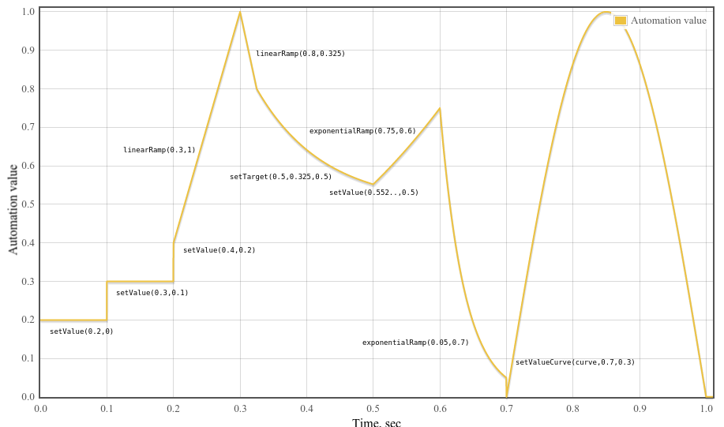
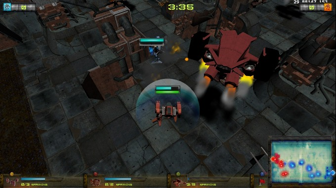

1. 序文 原文
このセクションは参考情報です
これまでのWeb上のオーディオはかなり未発達なもので、ごく最近までFlashやQuickTimeのようなプラグインを通して配信しなくてはなりませんでした。
HTML5でのaudio要素の導入は、基本的なストリーミング・オーディオ再生を可能にする重要なものでした。
しかし、より複雑なオーディオアプリケーションを扱うには、それだけではまだ充分強力ではありません。
洗練されたWebベースのゲームやインタラクティブ・アプリケーションのためには別の解決策が必要とされます。
この仕様では、近年のデスクトップ・オーディオ制作アプリケーションに見られるミキシング、プロセシング、フィルタリング処理に加え、近年のゲームオーディオエンジンに見られるような機能も持たせる事を目標とします。
このAPIはさまざまな使用例 を考慮して設計されています。
理想的には全ての 使用例が、JavaScriptから制御される最適化されたC++エンジンを使って無理なく実装でき、ブラウザで動作するようにサポートされなくてはなりません。
とは言っても、近年のデスクトップ・オーディオソフトウェアは極めて高度な機能を持ち、それらの一部はこのシステムを使ったとしても構築する事が困難か不可能と考えられます。
Apple社のLogic Audioがそのようなアプリケーションの1つであり、外部MIDIコントローラー、任意のプラグイン・オーディオエフェクトやシンセサイザー、高度に最適化されたオーディオファイルのディスクへの読み込み/書き出し、密に統合されたタイムストレッチなどなどをサポートしています。
それでもなお、ここで提案するシステムは、音楽に関するものを含めて、かなり複雑なゲームやインタラクティブ・アプリケーションの広い範囲を充分にサポートする事が可能です。
またそれは、WebGLによってもたらされる、より高度なグラフィックスの機能をよく引き立たせる事が可能です。
このAPIはより高度な機能を後から追加できるように設計されています。
1.1. 機能 原文
このAPIは、これらの基本機能をサポートします:
単純な、または複数のセンド、サブミックス を含む複雑なミキシング/エフェクト・アーキテクチャーのためのモジュラールーティング
非常に高度なリズムの精度を必要とするドラムマシンやシーケンサーなどのアプリケーションのための、低レイテンシー なサンプル単位の時間精度での音の再生 。これには、エフェクトを動的に生成 できるようにする事も含まれます
エンベロープ、フェードイン/フェードアウト、グラニュラーエフェクト、フィルタスイープ、LFOなどのためのオーディオパラメータのオートメーション
分割や結合など、オーディオストリームのチャンネルに対する柔軟な扱い
audio または video メディア要素 からのオーディオに対する処理getUserMedia()からのMediaStream を使用したライブオーディオに対する処理
WebRTCとの統合
JavaScriptでの直接的な オーディオストリームの合成および加工3Dゲームや没入環境を幅広くサポートする空間音響 :
パンニングモデル: 等価パワー, HRTF, パススルー
距離減衰
サウンドコーン
障害物 / 遮蔽物
ドップラー効果
ソース / リスナー
広範囲の線形エフェクト、特に非常に高い品質のルーム・エフェクトに使用できるコンボリューションエンジン 。
これによって可能なエフェクトの例を以下に示します:
小さい / 大きい部屋
大聖堂
コンサートホール
洞窟
トンネル
廊下
森
野外劇場
出入り口を経由した遠くの部屋
極端なフィルタ
風変りな巻き戻し効果
極端なコムフィルタ効果
ミックス全体の制御やスウィートニング(訳注:ビデオに効果音などをつけるMA作業) のためのダイナミック・コンプレッション
効率的なリアルタイムの時間領域および周波数領域解析 / ミュージックビジュアライザーのサポート
効率的な双2次フィルタによる、ローパス、ハイパス、その他一般的なフィルタ
ディストーションやその他の非線形エフェクトのためのウェーブシェイピング・エフェクト
オシレータ
1.2. モジュラールーティング 原文
モジュラールーティングによって異なる AudioNode入力 および出力 を持っています。
ソースノード は入力は持たず、1つの出力を持ちます。
デスティネーションノード は1つの入力を持ち、出力は持っていません。この最も一般的な例が最終的なオーディオハードウェアに繋がるAudioDestinationNode適正な処理が行われます 。
例えばもしモノラルの音声ストリームがステレオの入力に接続されていても、左右のチャンネルに適正 にミックスされます。
最も単純な例は、1つの音声ソースを出力に直接接続したものです。
すべての接続はAudioDestinationNodeAudioContext
この単純なルーティングを図示します。この例では単一の音を再生しています:
ECMAScript
var context = new AudioContext();
function playSound() {
var source = context.createBufferSource();
source.buffer = dogBarkingBuffer;
source.connect(context.destination);
source.start(0);
}
これはもっと複雑な例で、3つのソースとコンボリューションリバーブが最終出力段にあるダイナミックコンプレッサーを介して送られます:
ECMAScript
var context = 0;
var compressor = 0;
var reverb = 0;
var source1 = 0;
var source2 = 0;
var source3 = 0;
var lowpassFilter = 0;
var waveShaper = 0;
var panner = 0;
var dry1 = 0;
var dry2 = 0;
var dry3 = 0;
var wet1 = 0;
var wet2 = 0;
var wet3 = 0;
var masterDry = 0;
var masterWet = 0;
function setupRoutingGraph () {
context = new AudioContext();
// Create the effects nodes.
lowpassFilter = context.createBiquadFilter();
waveShaper = context.createWaveShaper();
panner = context.createPanner();
compressor = context.createDynamicsCompressor();
reverb = context.createConvolver();
// Create master wet and dry.
masterDry = context.createGain();
masterWet = context.createGain();
// Connect final compressor to final destination.
compressor.connect(context.destination);
// Connect master dry and wet to compressor.
masterDry.connect(compressor);
masterWet.connect(compressor);
// Connect reverb to master wet.
reverb.connect(masterWet);
// Create a few sources.
source1 = context.createBufferSource();
source2 = context.createBufferSource();
source3 = context.createOscillator();
source1.buffer = manTalkingBuffer;
source2.buffer = footstepsBuffer;
source3.frequency.value = 440;
// Connect source1
dry1 = context.createGain();
wet1 = context.createGain();
source1.connect(lowpassFilter);
lowpassFilter.connect(dry1);
lowpassFilter.connect(wet1);
dry1.connect(masterDry);
wet1.connect(reverb);
// Connect source2
dry2 = context.createGain();
wet2 = context.createGain();
source2.connect(waveShaper);
waveShaper.connect(dry2);
waveShaper.connect(wet2);
dry2.connect(masterDry);
wet2.connect(reverb);
// Connect source3
dry3 = context.createGain();
wet3 = context.createGain();
source3.connect(panner);
panner.connect(dry3);
panner.connect(wet3);
dry3.connect(masterDry);
wet3.connect(reverb);
// Start the sources now.
source1.start(0);
source2.start(0);
source3.start(0);
}
1.3. APIの概要 原文
定義されているインターフェースは次の通りです:
4. オーディオAPI 原文
4.1. AudioContextインターフェース 原文
このインターフェースはAudioNodeAudioDestinationNode接続 されます。
多くの場合、1つのドキュメントに対し、1つのAudioContextが使用されます。
Web IDL
callback DecodeSuccessCallback = void (AudioBuffer decodedData);
callback DecodeErrorCallback = void ();
[Constructor]
interface AudioContext : EventTarget {
readonly attribute AudioDestinationNode destination;
readonly attribute float sampleRate;
readonly attribute double currentTime;
readonly attribute AudioListener listener;
AudioBuffer createBuffer(unsigned long numberOfChannels, unsigned long length, float sampleRate);
void decodeAudioData(ArrayBuffer audioData,
DecodeSuccessCallback successCallback,
optional DecodeErrorCallback errorCallback);
AudioBufferSourceNode createBufferSource();
MediaElementAudioSourceNode createMediaElementSource(HTMLMediaElement mediaElement);
MediaStreamAudioSourceNode createMediaStreamSource(MediaStream mediaStream);
MediaStreamAudioDestinationNode createMediaStreamDestination();
ScriptProcessorNode createScriptProcessor(optional unsigned long bufferSize = 0,
optional unsigned long numberOfInputChannels = 2,
optional unsigned long numberOfOutputChannels = 2);
AnalyserNode createAnalyser();
GainNode createGain();
DelayNode createDelay(optional double maxDelayTime = 1.0);
BiquadFilterNode createBiquadFilter();
WaveShaperNode createWaveShaper();
PannerNode createPanner();
ConvolverNode createConvolver();
ChannelSplitterNode createChannelSplitter(optional unsigned long numberOfOutputs = 6);
ChannelMergerNode createChannelMerger(optional unsigned long numberOfInputs = 6);
DynamicsCompressorNode createDynamicsCompressor();
OscillatorNode createOscillator();
PeriodicWave createPeriodicWave(Float32Array real, Float32Array imag);
};
4.1.1. 属性 原文
destinationAudioDestinationNodedestinationに接続されます。
sampleRateAudioContextが扱うオーディオのサンプルレート(1秒あたりのサンプルフレーム数)。
コンテキスト内のすべてのAudioNodeはこのレートで動作する事を想定しています。
これを想定するため、サンプレートコンバータや"可変速"処理はリアルタイム処理内ではサポートされません。
currentTimeこれはコンテキストが作成された時点を0として実時間で増加してゆく、秒で表される時刻です。
全てのスケジュールされた時刻はこれに対する相対値となります。
これは再生、ポーズ、位置指定などが可能な"トランスポート"(訳注:テープレコーダーなどの再生/巻き戻しなどの機構の事) の時刻ではなく、
常に増加する方向に進んでゆきます。GarageBandのようなタイムライン"トランスポート"型の
システムはこの上に非常に簡単に(JavaScriptで)構築できます。
この時刻は常に増加してゆくハードウェアのタイムスタンプに対応しています。
listener3D空間音響 で使われるAudioListener
4.1.2. メソッドとパラメータ 原文
createBuffer メソッド与えられたサイズのAudioBufferを作成します。バッファ内のデータは0(無音)で初期化されます。
もし、numberOfChannelsまたはsampleRateが範囲外の場合、またはlengthが0の場合、NOT_SUPPORTED_ERR例外が発生しなくてはなりません(MUST)。
numberOfChannels パラメータはバッファが持つチャンネル数を指定します。
実装は少なくとも32チャンネルをサポートしなくてはなりません。
length パラメータはバッファのサイズをサンプルフレーム数で指定します。
sampleRate パラメータはバッファ内のリニアPCMオーディオデータのサンプルレートを秒あたりのサンプルフレーム数で表します。
実装は少なくとも22050から96000の範囲をサポートしなくてはなりません。
decodeAudioData メソッドArrayBuffer内にあるオーディオファイルのデータを非同期にデコードします。
ArrayBufferは、例えばXMLHttpRequestでresponseTypeに"arraybuffer"を指定した場合の
response属性としてロードされます。
オーディオファイルデータはaudio要素でサポートされるどのフォーマットでも構いません。
audioData はオーディオファイルのデータを含むArrayBufferです。
successCallback は、デコードが終了した時に呼び出されるコールバック関数です。
コールバック関数の引数はデコードされたPCMオーディオデータをあらわすAudioBufferになります。
errorCallback はオーディオファイルデータをデコード中にエラーが起こった場合に呼び出されるコールバック関数です。
次のステップが実行されなくてはなりません:
JavaScriptからアクセスや変更ができないようにaudioData のArrayBufferを一時的に中立化します。
デコード処理が別のスレッドで実行されるようにキューに登録します。
デコードスレッドが、エンコードされているaudioData からリニアPCMへのデコードを試みます。
もしオーディオフォーマットが認識できない、あるいはサポートされていない、あるいはデータが壊れている/想定していない/矛盾しているなどのためデコードエラーが発生した場合、
audioData の中立化状態は解除され、メインスレッドのイベントループでerrorCallback 関数を呼び出すようにスケジュールされてこのステップを終了します。
デコードスレッドがリニアPCMオーディオデータのデコード結果を得て、そのaudioData のサンプルレートがもし異なっている場合、AudioContextのサンプルレートにリサンプリングされます。
最終的な結果(必要ならサンプルレート変換の後)がAudioBufferに格納されます。
audioData の中立化状態が解除されます。ステップ(4)のAudioBufferを引数としてsuccessCallback 関数がメインスレッドのイベントループから呼び出されるようにスケジュールされます。
createBufferSourceメソッドAudioBufferSourceNode
createMediaElementSourceメソッド与えられたHTMLMediaElementからMediaElementAudioSourceNode
createMediaStreamSourceメソッド与えられたMediaStreamからMediaStreamAudioSourceNode
createMediaStreamDestinationメソッドMediaStreamAudioDestinationNode
createScriptProcessorメソッドJavaScriptによるオーディオデータ直接処理のためのScriptProcessorNodebufferSizeまたはnumberOfInputChannelsまたはnumberOfOutputChannelsが範囲外の場合、INDEX_SIZE_ERR例外が発生しなくてはなりません(MUST)。
bufferSize パラメータはサンプルフレーム数でバッファのサイズを指定します。
もしそれが渡されない場合、または値が0である場合、実装はノードのライフタイムを通して一定な、動作環境に最適な2の累乗のバッファサイズを選択します。
それ以外の場合、明示的にバッファサイズを指定します。それは次の値のどれかでなければなりません:
256、512、1024、2048、4096、8192、16384。
この値はaudioprocessイベントが発生する頻度とそれぞれの呼び出しでどれだけのサンプルフレームを処理する必要があるかを制御します。
bufferSizeが小さい値ならばレイテンシー は低く(良く)なります。
オーディオが途切れ、グリッジ が発生する事を避けるには大きな値が必要となります。
レイテンシーとオーディオ品質の間のバランスを取るためには、プログラマはこのバッファサイズを指定せず、実装に最適なバッファサイズを選択させる事が推奨されます。
numberOfInputChannels パラメータ (デフォルトは2) はこのノードの入力チャンネル数を指定します。
32チャンネルまでがサポートされなくてはなりません。
numberOfOutputChannels パラメータ (デフォルトは2) はこのノードの出力チャンネル数を指定します。
32チャンネルまでがサポートされなくてはなりません。
numberOfInputChannels と numberOfOutputChannelsの両方が0になってはいけません。
createAnalyserメソッドAnalyserNode
createGainメソッドGainNode
createDelayメソッド様々な遅延機能を表すDelayNode
maxDelayTime パラメータはオプションであり、その遅延機能の遅延時間の最大値を秒で指定します。
もし指定する場合は、その値は0よりも大きく3分よりも小さくなければなりません(MUST)。そうでなければ NOT_SUPPORTED_ERR例外が発生しなくてはなりません(MUST)。
createBiquadFilterメソッド幾つかのタイプのフィルタに設定可能な2次フィルタを表すBiquadFilterNode
createWaveShaperメソッド非線形な歪み効果を表すWaveShaperNode
createPannerメソッドPannerNode
createConvolverメソッドConvolverNode
createChannelSplitterメソッドチャンネル分割器を表すChannelSplitterNode
numberOfOutputs パラメータは出力の数を指定し、32までサポートされなくてはなりません。
もし指定されない場合は6となります。
createChannelMergerメソッドチャンネル結合器を表すChannelMergerNode
numberOfInputs パラメータは入力の数を指定し、32までサポートされなくてはなりません。
もし指定されない場合は6となります。
createDynamicsCompressorメソッドDynamicsCompressorNode
createOscillatorメソッドOscillatorNode
createPeriodicWaveメソッド任意の倍音構成を表すPeriodicWavereal および imagパラメータはFloat32Array型で0より大きく4096以下の同じ長さでなくてはなりません。
そうでない場合、INDEX_SIZE_ERR例外が発生しなくてはなりません(MUST)。
これらのパラメータは任意の周期波形を表すフーリエ級数 の係数の一部分を表します。
作成されたPeriodicWaveはOscillatorNode正規化 された時間領域の波形を表現します。
別の言い方をするとこれはOscillatorNoderealおよび imagパラメータは相対値を表します。
real パラメータはコサイン項(慣習的な言い方でA項)の配列を表します。
オーディオの用語では最初の要素(インデックス0)は周期波形のDCオフセットであり、通常は0に設定されます。
2番目の要素(インデックス1)は基本周波数を表します。3番目の要素は最初の倍音を表し、それ以降も同様に続いてゆきます。
imag パラメータはサイン項(慣習的な言い方でB項)の配列を表します。
最初の要素(インデックス0)はフーリエ級数には存在しないため、0でなくてはなりません(これは無視されます)。
2番目の要素(インデックス1)は基本周波数を表します。3番目の要素は最初の倍音を表し、それ以降も同様に続いてゆきます。
4.1.3. ライフタイム 原文
このセクションは参考情報です。
AudioContextは一度作成されると、再生される音がなくなるかそのページを離れるまで音の再生を続けます。
4.1b. OfflineAudioContextインターフェース 原文
OfflineAudioContextは特殊なAudioContextであり、レンダリング/ミキシングで使用され、(可能性としては)リアルタイムよりも高速に動作します。
それはオーディオハードウェアに出力しない代わりに可能な限り高速に動作して、終了時にイベントハンドラを結果を格納したAudioBufferと共に呼び出します。
Web IDL
[Constructor(unsigned long numberOfChannels, unsigned long length, float sampleRate)]
interface OfflineAudioContext : AudioContext {
void startRendering();
attribute EventHandler oncomplete;
};
4.1b.1. 属性 原文
oncompleteOfflineAudioCompletionEvent 型のイベントハンドラです。
4.1b.2. メソッドとパラメータ 原文
startRenderingメソッド
現在の接続とスケジュールされたパラメータ変化を与えて、オーディオのレンダリングを開始します。
レンダリング終了時にoncompleteハンドラが一度だけ呼び出されます。
このメソッドを呼び出すのは一度だけでなくてはなりません。
そうでない場合、INVALID_STATE_ERR例外が発生します(MUST)。
4.1c. OfflineAudioCompletionEventインターフェース 原文
これはOfflineAudioContextEventオブジェクトです。
Web IDL
interface OfflineAudioCompletionEvent : Event {
readonly attribute AudioBuffer renderedBuffer;
};
4.1c.1. 属性 原文
renderedBufferOfflineAudioContextがレンダリングを完了した後の、レンダリングされたオーディオデータを含むAudioBufferです。
OfflineAudioContextのコンストラクタのnumberOfChannelsパラメータに等しいチャンネル数を持ちます。
4.2. AudioNode インターフェース 原文
AudioNodeはAudioContext処理グラフ を形成します。
それぞれのノードは入力 や出力 を持つ事ができます。
ソースノード は入力を持たず、単一の出力を持ちます。
AudioDestinationNodeAudioNodeはどのようにオーディオを処理したり合成したりするかの詳細が異なっています。
しかし、一般的にAudioNodeは(持っていれば)その入力を処理し、(持っていれば)その出力にオーディオ信号を送り出します。
それぞれの出力 は1つ以上のチャンネル を持っています。正確なチャンネル数はそれぞれのAudioNodeの詳細に依存します。
出力は1つ以上のAudioNode入力に接続でき、つまりファンアウト がサポートされています。
入力は初期化時には接続されていません。しかし、1つ以上のAudioNode出力から接続する事ができ、即ち、ファンイン がサポートされています。
AudioNodeの出力をAudioNodeの入力に接続するためconnect()メソッドが呼ばれた時、それを、その入力への接続 と呼びます。
各AudioNodeの入力 はその時々で特定のチャンネル数を持ちます。この数はその入力への接続 によって変化します。
もし入力が接続を持っていない場合、チャンネル数は1で無音となります。
AudioNodeはそれぞれの入力 について、その入力への接続のミックス(通常はアップミックス)を行います。
この詳細に関して参考情報としてはミキサーゲイン構成 、基準としての要件についてはチャンネルのアップミックスとダウンミックス を参照してください。
パフォーマンス的な理由から実際の実装ではそれぞれのAudioNodeは決まったブロックサイズ のサンプルフレームをブロック単位に処理する事が必要になると思われます。
実装による振る舞いを統一するため、この値を明示的に定めます。ブロックサイズ はサンプルレート44.1kHzにおいて約3msとなる128サンプルフレームとします。
AudioNodeは、DOM [DOM] で記述されるEventTarget です。
これは他のEventTargetがイベントを受け取るのと同じ方法でイベントをAudioNodeにディスパッチする事が可能である事を意味します。
Web IDL
enum ChannelCountMode {
"max",
"clamped-max",
"explicit"
};
enum ChannelInterpretation {
"speakers",
"discrete"
};
interface AudioNode : EventTarget {
void connect(AudioNode destination, optional unsigned long output = 0, optional unsigned long input = 0);
void connect(AudioParam destination, optional unsigned long output = 0);
void disconnect(optional unsigned long output = 0);
readonly attribute AudioContext context;
readonly attribute unsigned long numberOfInputs;
readonly attribute unsigned long numberOfOutputs;
// Channel up-mixing and down-mixing rules for all inputs.
attribute unsigned long channelCount;
attribute ChannelCountMode channelCountMode;
attribute ChannelInterpretation channelInterpretation;
};
4.2.1. 属性 原文
contextこのAudioNodeを所有するAudioContextです。
numberOfInputsこのAudioNodeに信号を供給する入力の数です。ソースノード ではこれは0となります。
numberOfOutputsこのAudioNodeから出てゆく出力の数です。AudioDestinationNodeではこれは0となります。
channelCountチャンネル数です。このノードの入力の接続におけるアップミックスおよびダウンミックスで使用されます。値が別途定められている特定のノードを除いて、デフォルトは2です。
この属性は入力を持たないノードでは意味を持ちません。
もしこの値が0にセットされると、実装はNOT_SUPPORTED_ERR例外を発生しなくてはなりません(MUST)。
この属性の詳細ついてはチャンネルのアップミックスとダウンミックス セクションを参照してください。
channelCountModeこのノードの入力のアップミックスおよびダウンミックス時のチャンネル数の数え方を決定します。
この属性は入力を持たないノードでは意味を持ちません。
この属性の詳細ついてはチャンネルのアップミックスとダウンミックス セクションを参照してください。
channelInterpretationこのノードのアップミックスおよびダウンミックス時に各チャンネルをどのように扱うかを決定します。
この属性は入力を持たないノードでは意味を持ちません。
この属性の詳細ついてはチャンネルのアップミックスとダウンミックス セクションを参照してください。
4.2.2. メソッドとパラメータ 原文
AudioNodeへのconnectメソッド
AudioNodeを他のAudioNodeに接続します。
destination パラメータは接続先となるAudioNodeです。
output パラメータはAudioNodeのどの出力を接続するかを指定するインデックスです。
もしこのパラメータが範囲外の場合、INDEX_SIZE_ERR例外が発生しなくてはなりません(MUST)。
input パラメータは接続先のAudioNodeのどの入力に接続するかを指定するインデックスです。
もしこのパラメータが範囲外の場合INDEX_SIZE_ERR例外が発生しなくてはなりません(MUST)。
connect()を複数回呼び出して、AudioNodeの出力を複数の入力に接続する事が可能です。
つまり、"ファンアウト"がサポートされています。
AudioNodeを他のAudioNodeに接続して循環 を作る事が可能です。
別の言い方をすれば、AudioNodeを他のAudioNodeに接続してゆき、最初のAudioNodeに戻って来ても構いません。
ただしこれは循環 の中に少なくとも1つのDelayNode を
含んでいる場合のみ可能です。そうでない場合、NOT_SUPPORTED_ERR例外が発生しなくてはなりません(MUST)。
特定のノードの出力と特定のノードの入力の間には接続は1つのみ存在できます。
同じ終端点を持つ複数の接続は無視されます。例えば:
nodeA.connect(nodeB);
nodeA.connect(nodeB);
は次と同じ効果を持ちます
nodeA.connect(nodeB);
AudioParamへのconnectメソッド
AudioNodeをAudioParamに接続し、パラメータの値をオーディオ信号レートで制御します。
destination パラメータは接続先のAudioParamです。
output パラメータはAudioNodeのどの出力から接続するかを指定します。
もしこのパラメータが範囲外の場合、INDEX_SIZE_ERR例外が発生しなくてはなりません(MUST)。
connect()を複数回呼び出して、AudioNodeの出力を複数のAudioParamに接続する事が可能です。
即ち、"ファンアウト"をサポートしています。
connect()を複数回呼び出して、複数のAudioNodeの出力を1つのAudioParamに接続する事が可能です。
即ち、"ファンイン"をサポートしています。
AudioParamはそれに接続されているAudioNodeの出力からオーディオデータを取り出し、それがモノラルでなければ、ダウンミックスによってモノラルに変換 します。
そして接続されている各出力をミックスし、更に最終的にパラメータが持っているタイムラインスケジュールを含む固有値 (AudioParamに何も接続されていない状態での値)とミックスします。
特定のノードの出力と特定のAudioParamの間の接続は1つのみ存在できます。
同じ終端点を持つ複数の接続は無視されます。例えば:
nodeA.connect(param);
nodeA.connect(param);
は次と同じ効果を持ちます
nodeA.connect(param);
disconnect メソッドAudioNodeの出力からの接続を切断します。
output パラメータは接続を切るAudioNodeの出力のインデックスです。
もしこのoutputパラメータが範囲外の場合、INDEX_SIZE_ERR例外が発生しなくてはなりません(MUST)。
4.2.3. ライフタイム 原文
このセクションは参考情報です。
実装では、必要のないリソース利用や、未使用または終了しているノードが際限なくメモリを使うのを避ける為の何らかの方法を選ぶでしょう。
以降の説明は、一般的に期待されるノードのライフタイムの管理の仕方を案内するものです。
何かしら参照される限り、AudioNodeは存在し続けるでしょう。参照には何種類かのタイプがあります。:
通常 のJavaScript参照。通常のガベージコレクションのルールに従います。AudioBufferSourceNodesとOscillatorNodesの再生中 の参照。
再生している間これらのノードは、自分自身への再生中 参照を維持します。接続 参照。別のAudioNodeから接続されている場合に発生します。余韻時間 参照。何かしらの内部プロセスで未解放のステートになっている場合は、その間、自分自身を維持します。
例えば、ConvolverNodeは無音の入力を受けた後でも再生し続ける余韻を持ちます。
(大きなコンサートホールで柏手を打つと、ホール中に響きわたる音が聞こえるのをイメージして下さい)。
いくつかのAudioNodeは、この特性を持ちます。
各ノードの詳細を見てください。
環状に接続され、且つ 直接または間接的にAudioContextのAudioDestinationNodeに接続されるすべてのAudioNodeは
AudioContextが存在している間は存在したままになります。
参照を全く持たなくなった時、AudioNodeは削除されます。 しかしそれが削除される前に、他のAudioNodeから自分への接続を切断します。
同様にこのノードから他のノードに対するすべての接続参照(3)を解放します。
上記の参照の種類に関わらず、ノードのAudioContextが削除された時には、もちろんAudioNodeは削除されます。
4.4. AudioDestinationNode インターフェース 原文
これはユーザーが聴く事になる最終的な音の出力地点を表すAudioNodeAudioContextdestination属性を介して
1つだけ存在します。
numberOfInputs : 1
numberOfOutputs : 0
channelCount = 2;
channelCountMode = "explicit";
channelInterpretation = "speakers";
Web IDL
interface AudioDestinationNode : AudioNode {
readonly attribute unsigned long maxChannelCount;
};
4.4.1. 属性 原文
maxChannelCountchannelCount属性で設定できるチャンネル数の最大値です。
AudioDestinationNodeは(通常は)オーディオハードウェアの終端点を表し、マルチチャンネル対応のハードウェアならば2チャンネル以上の音を出力する事ができます。
maxChannelCountはハードウェアがサポートできるチャンネル数の最大値です。
もしこの値が0ならばchannelCountは変更できない事を表します。
これはOfflineAudioContextのAudioDestinationNodeやハードウェアの基本実装がステレオ出力のみに対応している場合です。
通常のAudioContextのdestinationでは、channelCountのデフォルト値は2であり、0以外でmaxChannelCountと同じか小さい値に設定する事ができます。
値が有効な範囲外の場合、INDEX_SIZE_ERR例外が発生しなくてはなりません(MUST)。
具体的な例をあげれば、もしオーディオハードウェアが8チャンネル出力をサポートしている場合、numberOfChannelsを8に設定でき、8チャンネルの出力が得られます。
OfflineAudioContextのAudioDestinationNodeについては、channelCountはOfflineAudioContextが作成された時点で決定され、この値は変更できません。
4.5. AudioParamインターフェース 原文
AudioParam はAudioNodevalue属性を使って特定の値に即時にセットする事ができます。
あるいは(AudioContext.currentTimeと連動した)非常に高い時間精度で値の変化のスケジュールを組む事ができ、エンベロープ、音量のフェード、LFO、フィルタスイープ、グレイン窓、などに応用する事ができます。
このような方法で任意のタイムラインベースのオートメーション曲線をすべてのAudioParamに対して設定する事が可能です。
また更に、AudioNodeからの出力の音声信号をAudioParamに接続する事ができ、個別 に持っているパラメータの値に加算する事ができます。
幾つかの合成や処理のAudioNodeは、オーディオサンプル単位で反映されなくてはならないAudioParam型の属性を持っています。
その他のAudioParamはサンプル単位の精度は重要ではなく、その値の変化はより粗く取り込まれます。
それぞれのAudioParamはa-rate パラメータつまりサンプル単位で反映されるか、それ以外のk-rate パラメータかが指定されます。
実装はそれぞれのAudioNodeについて、128サンプルフレーム毎のブロック単位の処理を行わなくてはなりません。
それぞれの128サンプルフレームのブロックに対して、k-rate パラメータは最初のサンプルのタイミングで取り込まれ、その値は
ブロック全体に対して使用されなくてはなりません。a-rate パラメータはブロック内のサンプルフレーム毎に取り込まれなくてはなりません。
Web IDL
interface AudioParam {
attribute float value;
readonly attribute float defaultValue;
void setValueAtTime(float value, double startTime);
void linearRampToValueAtTime(float value, double endTime);
void exponentialRampToValueAtTime(float value, double endTime);
void setTargetAtTime(float target, double startTime, double timeConstant);
void setValueCurveAtTime(Float32Array values, double startTime, double duration);
void cancelScheduledValues(double startTime);
};
4.5.1. 属性 原文
value浮動小数のパラメータの値です。
この属性の初期値はdefaultValueです。
もしvalueがオートメーションイベントが設定されている期間中に設定された場合、それは無視され、例外は発生しません。
defaultValuevalue属性の初期値です。
4.5.2. メソッドとパラメータ 原文
AudioParamは時間軸に沿ったイベントリストを保持し、その初期値は空になっています。
この時間はAudioContext.currentTimeによる時間軸を使用します。
イベントは時刻に対して値を割り付けるものです。
次のメソッドはそれぞれ対応する時刻を持っており、そのイベントは上記のイベントリストに保持されます。
これらのメソッドはオートメーション メソッドと呼ばれます:
setValueAtTime() - SetValue
linearRampToValueAtTime() - LinearRampToValue
exponentialRampToValueAtTime() - ExponentialRampToValue
setTargetAtTime() - SetTarget
setValueCurveAtTime() - SetValueCurve
これらのメソッドが呼ばれる時、次の規則が適用されます:
もし、これらのイベントのどれかをある時刻に追加しようとした時、まったく同じ型のイベントが同じ時刻に既に存在している場合、新しいイベントは古いイベントを置き換えます。
もし、これらのイベントのどれかをある時刻に追加しようとした時、同じ時刻に異なる型のイベントが1つ以上存在している場合、新しいイベントはそれら既にあるイベントの後ろで、時刻がより後ろのイベントの前に追加されます。
もし、setValueCurveAtTime()がtime T、duration Dで呼ばれた時、Tより後ろでT+Dより手前に何らかのイベントが既に存在している場合、NOT_SUPPORTED_ERR例外が発生しなくてはなりません(MUST)。
別の言い方をすると、他のイベントを含んだ期間の値のカーブをスケジュールする事はできません。
同様に、SetValueCurve イベントのtime Tとduration Dで示される期間内の時刻を指定して何らかのオートメーション メソッドを呼んだ場合、NOT_SUPPORTED_ERR例外が発生しなくてはなりません(MUST)。
setValueAtTime メソッド指定の時刻になるとパラメータ値を変更するようにスケジュールします。
value パラメータは指定の時刻になると設定される値です。
startTime パラメータはAudioContext.currentTimeと同じ時間軸で指定される時刻です。
もしSetValue イベント以降にこれ以上イベントがない場合、 時刻 t >= startTime に対して v(t) = value となります。
別の言い方をすると、valueは定数値ののまま保持されます。
もしこのSetValue イベントの次のイベント(時刻T1)の型がLinearRampToValue またはExponentialRampToValue ではない場合、時刻をtとした場合:
startTime <= t < T1 に対して v(t) = value となります。
別の言い方をすると、valueはこの期間内だけ保持され、"ステップ"を作る事ができます。
もしこのSetValue イベントの次のイベントの型がLinearRampToValue またはExponentialRampToValue である場合は次の詳細を参照してください。
linearRampToValueAtTime メソッド前にスケジュールされているパラメータ値から指定された値まで、直線的に連続して値を変化させる事をスケジュールします。
value は直線的に変化して指定の時刻になった時に到達する値です。
endTime はAudioContext.currentTimeと同じ時間軸で表された時刻です。
T0 <= t < T1の期間における値 (T0は1つ前のイベントの時刻、T1はこのメソッドのendTimeで指定される時刻)は次のように計算されます:
v(t) = V0 + (V1 - V0) * ((t - T0) / (T1 - T0))
ここでV0は時刻T0における値、V1はこのメソッドで指定された値です。
もしこのLinerRamptoValueイベント以降にこれ以上イベントが無い場合、時刻 t >= T1 に対して v(t) = V1 となります。
exponentialRampToValueAtTime メソッド前にスケジュールされているバラメータ値から指定された値まで、指数的に連続して値を変化させる事をスケジュールします。
フィルタの周波数や再生スピードなどのパラメータは人間の聴覚特性のため、指数的変化が適しています。
value は指定された時刻に指数的変化で到達する値です。
もし値が0かそれ以下、または前のイベントによる値が0かそれ以下の場合、NOT_SUPPORTED_ERR例外が発生しなくてはなりません(MUST)。
endTime はAudioContext.currentTimeと同じ時間軸で表された時刻です。
T0 <= t < T1の期間における値 (T0は1つ前のイベントの時刻、T1はこのメソッドのendTimeで指定される時刻)は次のように計算されます:
v(t) = V0 * (V1 / V0) ^ ((t - T0) / (T1 - T0))
ここでV0は時刻T0における値、V1はこのメソッドで指定された値です。
もしこのExponentialRamptoValueイベント以降に、これ以上イベントが無い場合、時刻 t >= T1 に対して v(t) = V1 となります。
setTargetAtTime メソッド指定の時間から、指定の時定数によって指数的に目標の値に漸近を開始します。
様々な使い方がありますが、これはADSRエンベロープの"ディケイ"および"リリース"を実装する際に役立ちます。
値は指定の時間に即、目標値になるのではなく徐々に変化する事に注意してください。
target は与えられた時刻になると開始 する変化の目標値を指定します。
startTime はAudioContext.currentTimeと同じ時間軸の時刻です。
timeConstant は目標の値に(指数的に)漸近する一次フィルタの時定数です。
大きな値だと変化はゆっくりになります。
より正確にはtimeConstant は、ステップ状の入力(0から1に変化)が入力された場合、一次の線形時不変系によって値が1 - 1/e (約63.2%) に到達するまでの時間です。
T0 <= t < T1 の期間: T0をstartTime として、T1が次のイベントの時刻とした場合(次のイベントがなければ無限 になります):
v(t) = V1 + (V0 - V1) * exp(-(t - T0) / timeConstant )
ここでV0はT0(startTime )における初期値(.value属性)、そしてV1はtarget の値です。
setValueCurveAtTime メソッド指定の時刻と期間に対して、任意の値の配列を設定します。配列の各値は必要とされる期間に合うように割り当てられます。
values は値の曲線を表すFloat32Arrayの配列です。
これらの値は指定された時刻に開始し、指定の期間で終了するように割り当てられます。
startTime はAudioContext.currentTimeと同じ時間軸を使用する時刻です。
duration は(time (訳注:startTime) 以降の) 秒で表される期間の長さであり、
この期間、値はvalues に従って計算されます。
startTime <= t < startTime + duration の期間内、値は次のように計算されます:
v(t) = values[N * (t - startTime) / duration]、 ここで、N はvalues 配列の長さです。
曲線の期間の後(t >= startTime + duration )、値は(あれば)次のオートメーションイベントまで曲線の最後の値を保持します。
cancelScheduledValues メソッドstartTimeと同じかそれ以降にスケジュールされているすべてのパラメータ変化をキャンセルします。
startTime はそれと同じかそれ以降に設定されていたパラメータ変化のスケジュールをキャンセルする時刻です。
これはAudioContext.currentTimeと同じ時間軸の時刻を使用します。
4.5.3. 値の計算 原文
computedValue はオーディオDSPを制御する最終的な値であり、オーディオレンダリングスレッドがそれぞれのレンダリング時刻に計算します。
内部的には次のように計算されなくてはなりません:
value属性に直接設定されるか、あらかじめ、またはこの時刻に値の変化スケジュールが設定(オートメーションイベント)されていればこれらのイベントから固有 の値が計算されます。
もし、オートメーションイベントがスケジュールされた後にvalue属性が設定された場合、これらのイベントは削除されます。
value属性を読みだした場合は常に現在の固有 の値を返します。
もしオートメーションイベントがある期間から削除された場合、固有 の値はvalue属性が直接設定されるか、その期間を対象にオートメーションイベントが追加されるまで、直前の値を保持したままになります。
AudioParamはAudioNodeの出力が接続されている場合、その出力がモノラルでなければダウンミックスしてモノラルに変換 し、他の同様に接続されている出力とミックスします。
もしAudioNodeが接続されていない場合はこの値は0となり、computedValue には影響を及ぼしません。
computedValue は固有 の値と(2)で計算された値の和となります。
4.5.4. AudioParam オートメーションの例 原文

ECMAScript
var t0 = 0;
var t1 = 0.1;
var t2 = 0.2;
var t3 = 0.3;
var t4 = 0.4;
var t5 = 0.6;
var t6 = 0.7;
var t7 = 1.0;
var curveLength = 44100;
var curve = new Float32Array(curveLength);
for (var i = 0; i < curveLength; ++i)
curve[i] = Math.sin(Math.PI * i / curveLength);
param.setValueAtTime(0.2, t0);
param.setValueAtTime(0.3, t1);
param.setValueAtTime(0.4, t2);
param.linearRampToValueAtTime(1, t3);
param.linearRampToValueAtTime(0.15, t4);
param.exponentialRampToValueAtTime(0.75, t5);
param.exponentialRampToValueAtTime(0.05, t6);
param.setValueCurveAtTime(curve, t6, t7 - t6);
4.7. GainNodeインターフェース 原文
オーディオ信号のゲインを変える事はオーディオアプリケーションでは基本的な処理です。
GainNodeはミキサー の構成ブロックの1つとなります。
このインターフェースは1つの信号入力と1つの信号出力を持つAudioNodeです:
numberOfInputs : 1
numberOfOutputs : 1
channelCountMode = "max";
channelInterpretation = "speakers";
これは入力のオーディオ信号を(場合によっては時間と共に変化する)gain属性で乗算し、結果を出力に渡します。
デフォルトではゲインは1であり、受け取った入力を変化させずにそのまま出力します。
他のAudioParamと同じようにgainパラメータは(AudioContext.currentTimeによる時間軸で)時間に対して浮動小数値を割り付けられます。
入力のPCMオーディオの各サンプルはそのサンプルに対応するgainパラメータの値で乗算されます。
この乗算された値は出力されるPCMオーディオのサンプルの値となります。
出力のチャンネル数は常に入力のチャンネル数と同じになり、それぞれのチャンネルの入力はgainの値で乗算されて対応するチャンネルの出力となります。
実装はクリックやグリッジが目立たないようにオーディオストリームに対するゲインの変更を滑らかに行わなくてはなりません。この処理は"de-zippering"と呼ばれます。
Web IDL
interface GainNode : AudioNode {
readonly attribute AudioParam gain;
};
4.7.1. 属性 原文
gain適用されるゲインの量を表します。デフォルトのvalueは1です(ゲイン変更なし)。名目上のminValueは0ですが、位相反転のために負の値に設定する事もできます。
名目上のmaxValueは1ですが(例外が発生する事なく)より大きな値を設定する事もできます。このパラメータはa-rate です。
4.8. DelayNodeインターフェース 原文
ディレイ機能はオーディオアプリケーションの基本的な構成要素です。このインターフェースは単一の入力と単一の出力を持つAudioNodeです。
numberOfInputs : 1
numberOfOutputs : 1
channelCountMode = "max";
channelInterpretation = "speakers";
出力のチャンネル数は常に入力のチャンネル数と同じになります。
これは入力されるオーディオ信号を一定の量だけ遅延させます。
具体的には各時刻t において、入力信号input(t) に対して、遅延時間delayTime(t) 、出力信号output(t) とすると
出力はoutput(t) = input(t - delayTime(t)) となります。
デフォルトのdelayTimeは0秒(遅延なし)です。
遅延時間が変更された場合、実装はオーディオストリームにクリックやグリッジが発生しないように変化を滑らかに行わなくてはなりません。
Web IDL
interface DelayNode : AudioNode {
readonly attribute AudioParam delayTime;
};
4.8.1. 属性 原文
delayTime遅延の量(単位は秒)を表すAudioParamオブジェクトです。
デフォルトではvalueは0(遅延なし)です。
最小値は0であり、最大値はAudioContextのcreateDelayメソッドの引数、maxDelayTimeで決定されます。
このパラメータはa-rate です。
4.9. AudioBufferインターフェース 原文
このインターフェースはメモリ上に保持されるオーディオのリソース(ワンショットの音やその他の短いオーディオクリップ)を表します。
そのフォーマットは-1 ～ +1の名目上の範囲を持つ非インターリーブのIEEE 32ビット・リニアPCMです。
1つ以上のチャンネルを持つ事ができます。
典型的には、そのPCMデータは適度に(通常1分以内程度に)短いと見込まれます。
音楽の1曲分のような長時間の音に関してはaudio要素とMediaElementAudioSourceNodeによるストリーミングを使うべきです。
AudioBufferは1つ以上のAudioContextで使用される場合があります。
Web IDL
interface AudioBuffer {
readonly attribute float sampleRate;
readonly attribute long length;
readonly attribute double duration;
readonly attribute long numberOfChannels;
Float32Array getChannelData(unsigned long channel);
};
4.9.1. 属性 原文
sampleRate1秒あたりのサンプル数で表されるPCMオーディオデータのサンプルレートです。
lengthサンプルフレーム数で表されるPCMオーディオデータの長さです。
duration秒で表されるPCMオーディオデータの再生時間です。
numberOfChannelsオーディオのチャンネル数です。
4.9.2. メソッドとパラメータ 原文
getChannelDataメソッド指定されたチャンネルのFloat32Array型のPCMオーディオデータを返します。
channel パラメータはデータを取得するチャンネルのインデックスを指定します。
インデックス値0は最初のチャンネルを表します。このインデックスはnumberOfChannels未満でなくてはならず(MUST)、そうでない場合
INDEX_SIZE_ERR例外が発生しなくてはなりません(MUST)。
4.10. AudioBufferSourceNodeインターフェース 原文
このインターフェースはAudioBufferによってメモリ上に保持されているオーディオデータからのオーディオソースを表します。
それは通常、(完全なリズムを刻むような)再生タイミングに高度な柔軟性が要求される短時間のオーディオのリソースです。
start()メソッドはいつ再生されるかをスケジュールするために使用されます。
再生は(もしloop属性が指定されていなければ)バッファのオーディオデータがすべて再生されると自動的に、
あるいはstop()メソッドが呼び出されて指定された時刻になると停止します。
より詳しくはstart()およびstop()の説明を参照してください。
start()とstop()はAudioBufferSourceNodeに対して複数回呼び出す事はできません。
numberOfInputs : 0
numberOfOutputs : 1
出力のチャンネル数は常に.buffer属性に指定されたAudioBufferのチャンネル数と同じになります。
もし.bufferがNULLの場合、チャンネルは無音の1チャンネルとなります。
Web IDL
interface AudioBufferSourceNode : AudioNode {
attribute AudioBuffer? buffer;
readonly attribute AudioParam playbackRate;
attribute boolean loop;
attribute double loopStart;
attribute double loopEnd;
void start(optional double when = 0, optional double offset = 0, optional double duration);
void stop(optional double when = 0);
attribute EventHandler onended;
};
4.10.1. 属性 原文
buffer再生されるオーディオのリソースを指定します。
playbackRateオーディオストリームを出力する再生速度です。デフォルトのvalueは1です。このパラメータはa-rate です。
loopオーディオデータをループ再生する事を指定します。デフォルトはfalseです。
loopStartオプションのパラメータで、loop属性がtrueの場合、ループの開始位置を秒で表します。
デフォルトのvalueは0で、これは通常0とバッファのdurationの間の任意の値に設定されます。
loopEndオプションのパラメータで、loop属性がtrueの場合、ループの終了位置を秒で表します。
デフォルトのvalueは0で、通常0とバッファのdurationの間の任意に値に設定されます。
onendedAudioBufferSourceNodeHTML EventHandlerを設定するための属性です。
AudioBufferSourceNodeのバッファの再生が終わった時、(HTML Eventがイベントハンドラにディスパッチされます。
4.10.2. メソッドとパラメータ 原文
startメソッド指定の時刻に音の再生開始をスケジュールします。
when パラメータは、再生の開始時刻を(秒で)指定します。
これはAudioContext.currentTimeと同じ時間軸の時刻を使用します。
もしこの値に0、あるいはcurrentTime よりも小さな値を渡した場合、音は即時に再生されます。
startはstopよりも前に一度だけ呼ばれなくてはなりません。
そうでない場合、INVALID_STATE_ERR例外が発生しなくてはなりません(MUST)。
offset パラメータはバッファ中の再生開始位置を(秒で)指定します。
もしこの値に0が渡された場合、再生はバッファの先頭から開始されます。
duration パラメータは再生される部分の長さを(秒で)指定します。
もしこの値が渡されなかった場合、再生の長さはAudioBuffer全体の長さからoffsetを引いたものになります。
即ち、offset も durationも指定されなかった場合、暗黙的にdurationは
AudioBuffer全体の長さとなります。
stopメソッド指定の時刻に再生停止をスケジュールします。
when パラメータは再生を停止する時刻を(秒で)指定します。
これはAudioContext.currentTimeと同じ時間軸の時刻を使用します。
もしこの値に0、あるいは currentTime よりも小さな値を渡した場合、音の再生は即時に停止します。
stopはstartが呼ばれた後で一度だけ呼ばれなくてはなりません。
そうでない場合、INVALID_STATE_ERR例外が発生しなくてはなりません(MUST)。
4.10.3. ループ再生 原文
もしstart()が呼ばれた時にloop属性がtrueであれば、再生はstop()が呼ばれて停止時刻になるまで無限に継続します。
これを"ループ"モードと呼びます。
再生は常にstart()のoffset引数で指定されたバッファ中の位置から開始され、ループ モード中、actualLoopEnd のバッファ位置(あるいはバッファの終端位置)
まで再生され、actualLoopStart のバッファ位置に戻る事が繰り返されます。
ループ モードでは実際の ループ位置はloopStartおよびloopEnd属性から次のように計算されます:
if ((loopStart || loopEnd) && loopStart >= 0 && loopEnd > 0 && loopStart < loopEnd) {
actualLoopStart = loopStart;
actualLoopEnd = min(loopEnd, buffer.length);
} else {
actualLoopStart = 0;
actualLoopEnd = buffer.length;
}
loopStartおよびloopEndのデフォルト値はどちらも0である事に注意が必要です。これはループがバッファの先頭から始まり、バッファの終端位置で終わる事を意味します。
低レベルの実装の詳細では、特定のサンプルレート(通常はAudioContextのサンプルレートと同じですが)のAudioBufferでは、
ループの時間(秒)がサンプルレートに従って適切なサンプルフレームの位置に変換されなくてはならない事に注意が必要です。
4.12. ScriptProcessorNodeインターフェース 原文
このインターフェースはJavaScriptによってオーディオを直接、合成、加工、分析する事ができるAudioNodeです。
numberOfInputs : 1
numberOfOutputs : 1
channelCount = numberOfInputChannels;
channelCountMode = "explicit";
channelInterpretation = "speakers";
ScriptProcessorNodeはbufferSizeを指定して作成され、そのサイズは次の値のどれかでなくてはなりません:
256、512、1024、2048、4096、8192、16384。
この値はaudioprocessイベントが発生する頻度と、それぞれの呼び出しで処理されるべきサンプルフレームの数
を制します。
audioprocessイベントはScriptProcessorNodebufferSizeを小さい値にするとレイテンシー は低く(良く)なります。
オーディオが途切れたりグリッジ が発生するのを避けるためには大きな値が必要になります。
createScriptProcessorのbufferSize引数が渡されない、あるいは0の場合、この値は実装によって
自動的に設定されます。
numberOfInputChannels および numberOfOutputChannelsは入力と出力の
チャンネル数を指定します。numberOfInputChannels と numberOfOutputChannelsの両方が0で
あってはいけません。
var node = context.createScriptProcessor(bufferSize, numberOfInputChannels, numberOfOutputChannels);
Web IDL
interface ScriptProcessorNode : AudioNode {
attribute EventHandler onaudioprocess;
readonly attribute long bufferSize;
};
4.12.1. 属性 原文
onaudioprocessScriptProcessorNodeHTML EventHandler
を設定するための属性です。
AudioProcessingEvent
bufferSizeonaudioprocessが呼ばれる度に処理が必要される(サンプルフレーム数で表される)バッファのサイズです。
適正な値は次のどれかです(256, 512, 1024, 2048, 4096, 8192, 16384)。
4.13. AudioProcessingEvent インターフェース 原文
これはScriptProcessorNodeEventオブジェクトです。
イベントハンドラは(もしあれば)入力からのオーディオをinputBuffer属性からデータにアクセスして処理します。
処理結果(あるいは入力がなければ合成した)オーディオデータはoutputBufferに出力します。
Web IDL
interface AudioProcessingEvent : Event {
readonly attribute double playbackTime;
readonly attribute AudioBuffer inputBuffer;
readonly attribute AudioBuffer outputBuffer;
};
4.13.1. 属性 原文
playbackTimeAudioContext.currentTimeと同じ時間軸で表された、そのオーディオが再生される時刻です。
playbackTimeによってJavaScriptでの処理をコンテキストのレンダリンググラフ中の他のイベントと非常に緊密に同期させる事が可能になります。
inputBuffer入力データを含むAudioBufferです。 これはcreateScriptProcessor()メソッドのnumberOfInputChannelsと同じチャンネル数を持ちます。
このAudioBufferはonaudioprocess関数のスコープ中でのみ有効です。
その値はスコープの外では意味を持ちません。
outputBuffer出力するオーディオデータを書き込むためのAudioBufferです。
これはcreateScriptProcessor()メソッドのnumberOfOutputChannelsと同じチャンネル数を持ちます。
onaudioprocess関数スコープ中のスクリプトコードはこのAufioBuffer中のチャンネルデータが表すFloat32Array配列に
書き込む事が期待されます。
このスコープ外での、このAudioBufferに対するスクリプトによる変更は何も効果を持ちません。
4.14. PannerNode インターフェース 原文
このインターフェースは入力されるオーディオストリームの3D空間での定位 / 空間音響 を処理するためのノードを表します。
空間音響はAudioContextAudioListenerlistener 属性)
に関連して処理されます。
numberOfInputs : 1
numberOfOutputs : 1
channelCount = 2;
channelCountMode = "clamped-max";
channelInterpretation = "speakers";
入力からのオーディオストリームは入力への接続に依存してモノラルまたはステレオとなります。
このノードの出力はステレオ(2チャンネル)に固定され、現在の所 変更する事はできません。
Web IDL
enum PanningModelType {
"equalpower",
"HRTF"
};
enum DistanceModelType {
"linear",
"inverse",
"exponential"
};
interface PannerNode : AudioNode {
attribute PanningModelType panningModel;
void setPosition(double x, double y, double z);
void setOrientation(double x, double y, double z);
void setVelocity(double x, double y, double z);
attribute DistanceModelType distanceModel;
attribute double refDistance;
attribute double maxDistance;
attribute double rolloffFactor;
attribute double coneInnerAngle;
attribute double coneOuterAngle;
attribute double coneOuterGain;
};
4.14.2. 属性 原文
panningModelオーディオを3D空間に定位させるために使用する空間音響アルゴリズムを指定します。
デフォルトは"HRTF"です。
"equalpower"単純で効率的な空間音響アルゴリズムで、等価パワーによるパンニングを行います。
"HRTF"高品質な空間音響アルゴリズムで、被験者を使ったインパルスレスポンス測定からのコンボリューション処理を使用します。
このパンニング方法はステレオ出力にレンダリングされます。
distanceModel音源がリスナーから離れていった時、音量を減衰させるためにどのアルゴリズムを使用するかを決定します。
デフォルトは"inverse"です。
"linear"distanceGain が次のように計算される直線距離モデルです:
1 - rolloffFactor * (distance - refDistance) / (maxDistance - refDistance)
"inverse"distanceGain が次のように計算される逆数距離モデルです:
refDistance / (refDistance + rolloffFactor * (distance - refDistance))
"exponential"distanceGain が次のように計算される指数距離モデルです:
pow(distance / refDistance, -rolloffFactor)
refDistance音源がリスナーから離れていった時の音量減衰のリファレンスとなる基準距離です。
デフォルトの値は1です。
maxDistance音量減衰の最大距離で、これ以上音源とリスナー間が離れても音量が減衰しません。
デフォルトの値は10000です。
rolloffFactor音源がリスナーが離れていった時の音量減衰の速さを表します。
デフォルトの値は1です。
coneInnerAngle音源の指向性パラメータで、角度で表します。この角度の内部では音量減衰が生じません。
デフォルトの値は360です。
coneOuterAngle音源の指向性パラメータで角度で表します。この角度の外側では音量の減衰率が定数値のconeOuterGain となります。
デフォルトの値は360です。
coneOuterGain音源の指向性パラメータで、角度がconeOuterAngle の外側の場合の減衰率です。
デフォルトの値は0です。
4.14.3. メソッドとパラメータ 原文
setPosition メソッドlistener 属性に相対する音源の位置を設定します。
3Dのデカルト座標系が使用されます。
x, y, z パラメータは3D空間中の座標を表します
デフォルトの値は (0,0,0)です。
setOrientation メソッド3D空間のデカルト座標系で音源の向いている方向を表します。
音がどれくらいの指向性(cone 属性で制御されます)を持っているかによって音が
リスナーからはずれると小さくなったり全く聴こえなくなったりします。
x, y, z パラメータは3D空間内での方向を表します。
デフォルトの値は(1,0,0)です。
setVelocity メソッド音源の速度ベクトルを設定します。
このベクトルは3D空間内での移動する方向と速度の両方を制御します。
この速度とリスナーの速度の相対値によってどれくらいのドップラー効果(ピッチの変化)が適用されるかが決定します。
このベクトルの単位はメートル / 秒 で、位置や方向ベクトルで使われる単位とは独立しています。
x, y, z パラメータは移動の方向と大きさを表しています。
デフォルトの値は(0,0,0)です。
4.15. AudioListener インターフェース 原文
このインターフェースはオーディオシーンを聴く人の位置と方向を表します。
全てのPannerNodelistenerとの関係で空間に配置されます。
空間音響についての詳細はこの セクションを見てください。
Web IDL
interface AudioListener {
attribute double dopplerFactor;
attribute double speedOfSound;
void setPosition(double x, double y, double z);
void setOrientation(double x, double y, double z, double xUp, double yUp, double zUp);
void setVelocity(double x, double y, double z);
};
4.15.1. 属性 原文
dopplerFactorドップラー効果をレンダリングする際に使用するピッチ偏移の量を決定する定数です。
デフォルトの値は1です。
speedOfSoundドップラー効果の計算の際に使用する音速です。
デフォルトの値は343.3です。
4.15.2. メソッドとパラメータ
setPosition メソッド3Dデカルト座標空間でのリスナーの位置を設定します。
PannerNodeオブジェクトはこの位置と音源との相対的な位置を空間音響のために使用します。
x, y, z パラメータは3D空間内の座標を表します。
デフォルトの値は(0,0,0)です。
setOrientation メソッド3Dデカルト座標空間でリスナーが向いている方向を表します。
front ベクトルとup ベクトルの両方が与えられます。
単純に人間について言えば、front ベクトルはその人の鼻が向いている方向を表します。
up ベクトルはその人の頭のてっぺんが向いている方向です。
これらは線形独立(互いに90度)の関係になります。
これらの値がどのように解釈されるかの基準としての要件は空間音響 セクションを見てください。
x, y, z パラメータは3D空間中のfront 方向ベクトルであり、デフォルトの値は
(0,0,-1)です。
xUp, yUp, zUp パラメータは3D空間中のup 方向ベクトルであり、デフォルトの値は
(0,1,0)になります。
setVelocity メソッドリスナーの速度ベクトルを設定します。
このベクトルは3D空間内での移動の方向と速度の両方を制御します。
この速度と音源の速度との相対値がドップラー効果(ピッチ変化)がどれだけ起こるかの決定に使用されます。
このベクトルの単位はメートル / 秒 であり、位置と方向のベクトルの単位とは独立しています。
x, y, z パラメータは移動の方向と大きさの方向ベクトルを表します。
デフォルトの値は(0,0,0)です。
4.16. ConvolverNode インターフェース 原文
このインターフェースはインパルスレスポンスによって線形コンボリューションエフェクト を
適用する処理ノードを表すインターフェースです。
マルチチャンネルのコンボリューションマトリックスに対する基準としての要件は
ここ に記述されています。
numberOfInputs : 1
numberOfOutputs : 1
channelCount = 2;
channelCountMode = "clamped-max";
channelInterpretation = "speakers";
Web IDL
interface ConvolverNode : AudioNode {
attribute AudioBuffer? buffer;
attribute boolean normalize;
};
4.16.1. 属性 原文
bufferConvolverNodeで使用される(マルチチャンネルの場合もある)インパルスレスポンスを含む
モノラル、ステレオ、または4チャンネルのAudioBufferです。
このAudioBufferはAudioContextと同じサンプルレートでなくてはなりません。
そうでない場合NOT_SUPPORTED_ERR例外が発生しなくてはなりません(MUST)。
この属性が設定される際に、buffer とnormalize 属性の状態がこのインパルスレスポンスが正規化されるかどうかのConvolverNodeの設定に使われます。
この属性の初期値はnullです。
normalizebuffer属性がセットされた時に等価パワーで正規化してインパルスレスポンスをスケーリングされるかどうかを制御します。
このデフォルトの値はtrueで、様々なインパルスレスポンスをロードした時にコンボルバーからの出力レベルを均一化するようになっています。
もし normalizeがfalseに設定された場合、インパルスレスポンスの前処理/スケーリングなしでコンボリューションが行われます。
この値を変更した場合、次回にbuffer 属性をセットするまで効果は現れません。
もしbuffer 属性を設定した時にnormalize 属性がfalseであればConvolverNodeはbuffer 内にあるインパルスレスポンス
をそのまま使用して線形コンボリューション処理を行います。
そうでなく、buffer 属性を設定した時にnormalize 属性がtrueであれば、ConvolverNodeは次のアルゴリズムによって、
まずbuffer 内のデータのスケールドRMS-パワー解析を行い、normalizationScale を計算します:
float calculateNormalizationScale(buffer)
{
const float GainCalibration = 0.00125;
const float GainCalibrationSampleRate = 44100;
const float MinPower = 0.000125;
// Normalize by RMS power.
size_t numberOfChannels = buffer->numberOfChannels();
size_t length = buffer->length();
float power = 0;
for (size_t i = 0; i < numberOfChannels; ++i) {
float* sourceP = buffer->channel(i)->data();
float channelPower = 0;
int n = length;
while (n--) {
float sample = *sourceP++;
channelPower += sample * sample;
}
power += channelPower;
}
power = sqrt(power / (numberOfChannels * length));
// Protect against accidental overload.
if (isinf(power) || isnan(power) || power < MinPower)
power = MinPower;
float scale = 1 / power;
// Calibrate to make perceived volume same as unprocessed.
scale *= GainCalibration;
// Scale depends on sample-rate.
if (buffer->sampleRate())
scale *= GainCalibrationSampleRate / buffer->sampleRate();
// True-stereo compensation.
if (buffer->numberOfChannels() == 4)
scale *= 0.5;
return scale;
}
処理の間ConvolverNodeはこの計算されたnormalizationScale 値を
最終出力を得るために入力と(buffer で表される)インパルスレスポンスを処理した線形コンボリューションの結果と掛け合わせます。
あるいは、例えば入力に事前にnormalizationScale をかけ合わせたり、normalizationScale を掛け合わせたバージョンのインパルスレスポンスを作るなど、
何らかの数学的に等価な演算が使用されるかも知れません。
4.17. AnalyserNode インターフェース 原文
このインターフェースはリアルタイムの周波数領域および時間領域の解析 を行う事ができるノードを表しています。
オーディオストリームは入力から出力にそのまま渡されます。
numberOfInputs : 1
numberOfOutputs : 1 Note that this output may be left unconnected.
channelCount = 1;
channelCountMode = "explicit";
channelInterpretation = "speakers";
Web IDL
interface AnalyserNode : AudioNode {
void getFloatFrequencyData(Float32Array array);
void getByteFrequencyData(Uint8Array array);
void getByteTimeDomainData(Uint8Array array);
attribute unsigned long fftSize;
readonly attribute unsigned long frequencyBinCount;
attribute double minDecibels;
attribute double maxDecibels;
attribute double smoothingTimeConstant;
};
4.17.1. 属性 原文
fftSize周波数領域の解析で使用されるFFTのサイズです。2の累乗(0を除く)で32から2048の範囲でなくてはなりません。
そうでない場合、INDEX_SIZE_ERR例外が発生しなくてはなりません(MUST)。
デフォルトの値は2048です。
frequencyBinCountFFTサイズの1/2です
minDecibelsFFT解析データをunsigned byte値へ変換するスケーリングの際の最少パワー値です。
デフォルトの値は-100です。
もしこの属性の値がmaxDecibelsかそれ以上に設定された場合、INDEX_SIZE_ERR例外が発生しなくてはなりません(MUST)。
maxDecibelsFFT解析データをunsigned byte値へ変換するスケーリングの際の最大パワー値です。
デフォルトの値は-30です。
もしこの属性の値がminDecibelsかそれ以上の値に設定された場合、INDEX_SIZE_ERR例外が発生しなくてはなりません(MUST)。
smoothingTimeConstant0 -> 1 の範囲の値で、0ならば最後の解析フレームに対して時間平均が取られない事を表します。
デフォルトの値は0.8です。
もしこの属性の値が0より小さいか1より大きい値が設定された場合、INDEX_SIZE_ERR例外が発生しなくてはなりません(MUST)。
4.17.2. メソッドとパラメータ 原文
getFloatFrequencyData メソッド現在の周波数データを渡された浮動小数値配列にコピーします。
もし配列の要素数がfrequencyBinCountよりも小さい場合、はみ出した部分は削られます。
もし配列がfrequencyBinCountよりも大きい要素数を持つ場合、余分な要素は無視されます。
array パラメータは周波数領域の解析結果を格納する場所を示します。
getByteFrequencyData メソッド現在の周波数データを渡されたunsigned byte配列にコピーします。
もし配列の要素数がfrequencyBinCountよりも小さい場合、はみ出した部分は削られます。
もし配列がfrequencyBinCountよりも大きい要素数を持つ場合、余分な要素は無視されます
array パラメータは周波数領域の解析結果の格納する場所を示します。
getByteTimeDomainData メソッド現在の時間領域データ(波形データ)を渡されたunsigned byte配列にコピーします。
もし配列の要素数がfftSizeよりも小さい場合、はみ出た部分は削られます。
もし配列がfftSizeよりも大きな要素数を持つ場合、余分な要素は無視されます。
array パラメータは時間領域解析データを格納する場所を示します。
4.18. ChannelSplitterNode インターフェース 原文
ChannelSplitterNodeは高度なアプリケーションで、ChannelMergerNode
numberOfInputs : 1
numberOfOutputs : Variable N (defaults to 6) // number of "active" (non-silent) outputs is determined by number of channels in the input
channelCountMode = "max";
channelInterpretation = "speakers";
このインターフェースはルーティンググラフ中のオーディオストリームの個別のチャンネルにアクセスするAudioNodeを表しています。
これは1つの入力と入力のオーディオストリームのチャンネル数と同じ数の"アクティブ"な出力を持ちます。
例えば、ステレオの入力ストリームがChannelSplitterNodeに接続された場合、アクティブな出力は2
(1つは左チャンネルから、もう1つは右チャンネルから)になります。
常に合計N個の出力(AudioContextのcreateChannelSplitter()のnumberOfOutputsパラメータで決まります)があり、
この値が渡されない場合のデフォルトの数は6になります。
"アクティブ"でないどの出力も無音を出力し、通常はどこにも接続されません。
例:
この例ではスプリッターはチャンネルの(例えば左チャンネル、右チャンネルなどの)識別はせず 、単純に入力チャンネルの順序に従って出力チャンネルを分割する事に注意してください。
ChannelSplitterNodeを使うアプリケーションの1つは個別のチャンネルのゲインの制御を必要とする"マトリックス・ミキシング"を行うものです。
Web IDL
interface ChannelSplitterNode : AudioNode {
};
4.19. ChannelMergerNode インターフェース 原文
ChannelMergerNodeは高度なアプリケーションで、ChannelSplitterNode
numberOfInputs : Variable N (default to 6) // number of connected inputs may be less than this
numberOfOutputs : 1
channelCountMode = "max";
channelInterpretation = "speakers";
このインターフェースは複数のオーディオストリームからチャンネルを結合して1つのオーディオストリームにするAudioNodeを表します。
これは可変数の入力(デフォルトは6)の入力を持ちますが、全ての入力を接続する必要はありません。
出力は1つでそのオーディオストリームは、接続された入力の全てのチャンネルの合計のチャンネル数を持ちます。
例えば、ChannelMergerNodeが2つの入力(どちらもステレオ)が接続された場合、出力は4チャンネルになり、
最初の2つは最初の入力から、次の2つは2番目の入力からになります。
別の例として、2つの入力(どちらもモノラル)の場合は、出力は2チャンネル(ステレオ)で、左チャンネルが最初の入力から、右チャンネルは2番目の入力から取られます。
例:
この例ではマージャーはチャンネルの(例えば左チャンネル、右チャンネルなどの)識別はせず 、単純に入力チャンネルの順序に従って出力チャンネルを結合する事に注意してください。
ChannelMergerNodeはオーディオハードウェアがサポートする最大チャンネル数を超える多くのチャンネル数を持つ
オーディオストリームを出力するように接続する事が可能な事に注意してください。
この場合、その出力はAudioContext.destination (オーディオハードウェア)に接続されると、余分なチャンネルは無視されます。
そのため、ChannelMergerNodeはチャンネル数について認識した状況で使用されなくてはなりません。
Web IDL
interface ChannelMergerNode : AudioNode {
};
4.20. DynamicsCompressorNode インターフェース 原文
DynamicsCompressorNodeはダイナミック・コンプレッション・エフェクトを実装したAudioNodeです。
ダイナミック・コンプレッションは音楽制作やゲーム・オーディオで非常に良く使われます。
これは信号の音量が大きな部分を抑え、音量が小さな部分を持ち上げます。
全体として、より大きく、豊かで隙間のない音を作る事ができます。
これは特に、多くの個別サウンドを同時に再生するゲームと音楽アプリケーションで、全体の信号レベルを制御してスピーカーへの出力のクリッピング(歪み)を避けるために重要です。
numberOfInputs : 1
numberOfOutputs : 1
channelCount = 2;
channelCountMode = "explicit";
channelInterpretation = "speakers";
Web IDL
interface DynamicsCompressorNode : AudioNode {
readonly attribute AudioParam threshold; // in Decibels
readonly attribute AudioParam knee; // in Decibels
readonly attribute AudioParam ratio; // unit-less
readonly attribute AudioParam reduction; // in Decibels
readonly attribute AudioParam attack; // in Seconds
readonly attribute AudioParam release; // in Seconds
};
4.20.1. 属性 原文
全てのパラメータはk-rate です。
thresholdこれを超えた時にコンプレッション動作を開始するデシベル値です。
デフォルトのvalueは-100から0の範囲中、-24になっています。
kneethreadholdを超えた部分の、"ratio"の変化が滑らかにカーブする範囲を表すデシベル値です。
このデフォルトのvalueは0から40の範囲中、30になっています。
ratio出力が1dB変化するための入力のdBの変化量です。
このデフォルトのvalueは、1から20の範囲中、12になっています。
reductionメーターの表示のために使用するリードオンリーのデシベル値で、
信号に対するコンプレッサーの動作による、現在のゲインの減衰量を表します。
もし信号が供給されていない場合この値は0(ゲイン減衰なし)になります。
名目上の範囲は-20から0になります。
attackゲインを10dB減衰させるために必要な時間(秒)です。
これは名目上0から1の範囲を持ち、デフォルトのvalueは0.003です。
releaseゲインを10dB増加させるために必要な時間(秒)です。
これは名目上0から1の範囲を持ち、デフォルトのvalueは0.25です。
4.21. BiquadFilterNode インターフェース 原文
BiquadFilterNodeは非常に一般的な低次フィルタを実装したAudioNodeです。
低次フィルタは基本的なトーンコントロール(バス、ミドル、トレブル)やグラフィックイコライザーやより高度なフィルタを構成するブロックです。
複数のBiquadFilterNodeフィルタを組み合わせてより複雑なフィルタを作る事もできます。
フィルタのパラメータの"frequency"などを時間と共に変化させてフィルタスイープやその他の効果を得る事もできます。
それぞれのBiquadFilterNodeは下のIDLで紹介する一般的なフィルタの型のうちの1つに設定する事ができます。
デフォルトのフィルタの型は"lowpass"です。
numberOfInputs : 1
numberOfOutputs : 1
channelCountMode = "max";
channelInterpretation = "speakers";
出力のチャンネル数は常に入力のチャンネル数と同じになります。
Web IDL
enum BiquadFilterType {
"lowpass",
"highpass",
"bandpass",
"lowshelf",
"highshelf",
"peaking",
"notch",
"allpass"
};
interface BiquadFilterNode : AudioNode {
attribute BiquadFilterType type;
readonly attribute AudioParam frequency; // in Hertz
readonly attribute AudioParam detune; // in Cents
readonly attribute AudioParam Q; // Quality factor
readonly attribute AudioParam gain; // in Decibels
void getFrequencyResponse(Float32Array frequencyHz,
Float32Array magResponse,
Float32Array phaseResponse);
};
フィルタの型について以下で簡単に説明します。
我々はこれらのフィルタがオーディオ処理で非常に良く使われている事に気づきます。
実装的に言えばこれらはすべて標準的なアナログフィルタのプロトタイプから派生したものです。
より技術的な詳細については、我々はRobert Bristow-Johnsonによる素晴らしい解説文書を参照します。
参照
全てのパラメータはk-rate であり、次のデフォルト値を持ちます:
frequency
350Hz、 名目上の範囲は10からナイキスト周波数(サンプルレートの半分)。
Q 1、 名目上の範囲は0.0001から1000。
gain
0、名目上の範囲は-40から40。
4.21.1 "lowpass" 原文
ローパスフィルタ は
カットオフ周波数より低い周波数をそのまま通し、カットオフよりも高い周波数を減衰させます。これは標準的な2次の
レゾナントローパスフィルタの実装で、12dB/オクターブのロールオフを持ちます。
frequency
カットオフ周波数
Q
カットオフ周波数にどれだけピークを付けて共振させるかを制御します。
大きな値はより強く共振させます。
このフィルタタイプではこの値は伝統的な従来のQではなく、デシベルで表される共振の値である事に注意してください。
gain
このフィルタのタイプでは使用しません。
4.21.2 "highpass" 原文
ハイパスフィルタ はローパスフィルタの反対の機能を持ちます。
カットオフ周波数よりも高い周波数をそのまま通し、カットオフよりも低い周波数を減衰させます。
これは標準的な2次レゾナントハイパスフィルタの実装で、12dB/オクターブのロールオフを持ちます。
frequency
これより低い周波数を減衰させるカットオフ周波数です。
Q
カットオフ周波数にどれだけピークを付けて共振させるかを制御します。
大きな値はより強く共振させます。
このフィルタタイプではこの値は伝統的な従来のQではなく、デシベルで表される共振の値である事に注意してください。
gain
このフィルタのタイプでは使用しません。
4.21.3 "bandpass" 原文
A バンドパスフィルタ はある範囲の周波数をそのまま通し、この周波数範囲より上または下の周波数を減衰させます。
これは2次のバンドパスフィルタを実装しています。
frequency
周波数範囲の中心周波数です。
Q 周波数範囲の幅を制御します。この幅はQが増加すると狭くなります。
gain
このフィルタのタイプでは使用しません。
4.21.4 "lowshelf" 原文
ローシェルフフィルタは全ての周波数を通しますが、低い周波数だけを増幅(または減衰)させます。
これは2次のローシェルフフィルタを実装しています。
frequency
増幅(または減衰)させる上限の周波数です。
Q このフィルタのタイプでは使用しません。
gain
dBで表した増幅率です。もしこの値が負ならばその周波数は減衰されます。
4.21.5 "highshelf" 原文
ハイシェルフフィルタはローシェルフフィルタとは反対に、すべての周波数を通しますが高い周波数だけを増幅します。
これは2次のハイシェルフフィルタを実装しています。
frequency
増幅(または減衰)させる下限の周波数です。
Q このフィルタのタイプでは使用しません。
gain
dBで表した増幅率です。もしこの値が負ならばその周波数は減衰されます。
4.21.6 "peaking" 原文
ピーキングフィルタは全ての周波数を通しますが、ある周波数の範囲だけが増幅(または減衰)されます。
frequency
増幅される中心の周波数です。
Q 増幅される周波数の幅を制御します。値が大きいと幅は狭くなります。
gain
dBで表した増幅率です。もしこの値が負ならばその周波数は減衰されます。
4.21.7 "notch" 原文
ノッチフィルタ(バンドストップまたはバンドリジェクション・フィルタ とも呼ばれます)は、バンドパスフィルタの逆です。
ある周波数を除く全ての周波数を通します。
frequency
ノッチを適用する中心の周波数です。
Q 減衰させる周波数の幅を制御します。大きな値は幅が狭い事を意味します。
gain
このフィルタのタイプでは使用しません。
4.21.8 "allpass" 原文
オールパスフィルタ は全ての周波数を通しますが、周波数の変化に対して位相が変化します。
これは2次のオールパスフィルタを実装しています。
frequency
位相変化が発生する中心の周波数です。別の見方では、最大の群遅延 になる周波数です。
Q 中心周波数での位相変化がどれくらい急峻であるかを制御します。値が大きいと、より急峻な位相変化で大きな群遅延である事を意味します。
gain
このフィルタのタイプでは使用しません。
4.21.9. メソッド 原文
getFrequencyResponse メソッド現在のフィルタパラメータの設定から指定の周波数に対する応答特性を計算します。
frequencyHz パラメータは応答特性を計算する周波数の配列を指定します。
magResponse パラメータはリニア振幅特性の値を受け取る配列を指定します。
phaseResponse パラメータはラジアン単位の位相特性を受け取る配列を指定します。
4.22. WaveShaperNode インターフェース 原文
WaveShaperNodeは非線形のディストーションエフェクトを実装したAudioNodeプロセッサです。
非線形ウェーブシェイピング歪みは微妙な非線形ウォーミングやはっきりしたディストーションの両方のエフェクトで一般的に使用されています。
任意の非線形シェイピング曲線を指定する事ができます。
numberOfInputs : 1
numberOfOutputs : 1
channelCountMode = "max";
channelInterpretation = "speakers";
出力のチャンネル数は常に入力のチャンネル数に同じです。
Web IDL
enum OverSampleType {
"none",
"2x",
"4x"
};
interface WaveShaperNode : AudioNode {
attribute Float32Array? curve;
attribute OverSampleType oversample;
};
4.22.1. 属性 原文
curveウェーブシェイピング・エフェクトで使用されるシェイピング曲線です。
入力信号は名目上-1 -> +1 の範囲になります。
この範囲内のそれぞれの入力サンプルは信号レベル0を配列の中心として、シェイピング曲線の配列
インデックスに対応付けられます。
-1よりも小さい全てのサンプルは曲線配列の最初の値に対応します。
+1よりも大きい全てのサンプルは曲線配列の最後の値に対応します。
実装は曲線配列の隣接した値から直線補間を行わなくてはなりません。
curve属性の初期値はnullで、これはWaveShaperNodeは入力を変更せずにそのまま出力する事を意味します。
oversampleシェイピング曲線を適用する際に(もし必要なら)使用するオーバーサンプリングのタイプを指定します。
デフォルトの値は"none"で、曲線はそのまま入力サンプルに適用されます。
"2x"または"4x"を指定すると、ある程度エイリアスを避けて品質を向上する事ができ、"4x"の場合にもっとも高い品質になります。
アプリケーションによっては非常に高精度のシェイピング曲線を使うため、オーバーサンプリングを使用しない方が良い場合があります。
"2x"または"4x"の値は次のステップが行われなくてはならない事を意味します:
入力サンプルをAudioContextのサンプルレートの2倍または4倍にアップサンプリングします。
つまりそれぞれの128サンプルのブロックは、256(2xの時)または512(4xの時)サンプルになります。
シェイピング曲線を適用します。
結果をAudioContextのサンプルレートにダウンサンプリングします。
つまり処理された256(あるいは512)サンプルは最終的な結果として128サンプルを生成します。
アップサンプリングとダウンサンプリングフィルタの詳細は定められておらず、(エイリアス低減などの)音の品質向上、低レイテンシー性、パフォーマンス面でのチューニングが可能です。
4.23. OscillatorNode インターフェース 原文
OscillatorNodeは周期的な波形を発生するオーディオソースを表しています。これは一般的に使われる幾つかの波形に設定する事ができます。
更に、これはPeriodicWave
オシレーターは音の合成において一般的な基本構成ブロックです。
OscillatorNodeはstart()メソッドで指定された時刻に音の発生を開始します。
数学的に言えば、連続した時間 の周期波形は周波数領域で考えた場合、非常に高い(あるいは無限に高い)周波数情報を持つ事ができます。
この波形があるサンプルレートの離散時間のデジタルオーディオ信号としてサンプリングされる場合、波形をデジタル化する前にナイキスト 周波数(サンプリング周波数の半分)よりも高い高周波数成分の除去(フィルタで取り除く事)を考慮しなくてはなりません。
これを行わない場合、(ナイキスト周波数よりも)高い周波数のエイリアス がナイキスト周波数よりも低い周波数に鏡像として折り返されます。
多くの場合、これは音として聴こえる好ましくないノイズを引き起こします。
これはオーディオDSPにおける基本的で良く知られている原理です。
このエイリアスを避けるため、実装に使う事のできる幾つかの実践的な手段があります。しかし、これらの手段によらず、理想的な 離散時間のデジタルオーディオ信号は数学的には完全に定義されます。
(CPUの負荷という意味で)実装のコスト対、理想への忠実性というトレードオフが実装上の問題になります。
実装はこの理想を達成するためにいくらかの考慮をする事が期待されますが、ローエンド・ハードウェアでは低品質ローコストな手段を考慮する事も合理的です。
.frequencyと.detuneはどちらもa-rate パラメータで、computedFrequency の値を決定するために一緒に使われます:
computedFrequency(t) = frequency(t) * pow(2, detune(t) / 1200)
OscillatorNodeの各時刻における位相はcomputedFrequency を時間で積分したものになります。
numberOfInputs : 0
numberOfOutputs : 1 (mono output)
Web IDL
enum OscillatorType {
"sine",
"square",
"sawtooth",
"triangle",
"custom"
};
interface OscillatorNode : AudioNode {
attribute OscillatorType type;
readonly attribute AudioParam frequency; // in Hertz
readonly attribute AudioParam detune; // in Cents
void start(double when);
void stop(double when);
void setPeriodicWave(PeriodicWave periodicWave);
attribute EventHandler onended;
};
4.23.1. 属性 原文
type周期波形の形状です。これは"custom"を除いて、波形の定数値を直接設定する事ができます。
setPeriodicWave()
frequency(Hz:ヘルツで表される)周期波形の周波数で、そのデフォルトのvalueは440です。このパラメータはa-rate です。
detune(セントで表される)デチューン値で、これは frequencyを与えられた量だけオフセットします。
デフォルトのvalueは0です。
このパラメータはa-rate です。
onendedOscillatorNodeHTML EventHandler
を設定するために使われる属性です。
OscillatorNodeのバッファ再生が終了した時、
(HTML Eventが
イベントハンドラにディスパッチされます。(訳注:この部分の記述はAudioBufferSourceNodeとの混同があります)
6. ミキサーゲイン構成 原文
このセクションは参考情報です
背景
オーディオ処理グラフについて考える時に重要な事の1つが、各ポイントにおけるゲイン(音量)をどのように調整するかです。
例えば、標準的なミキサー卓モデルの場合、それぞれの入力バスは、プリゲイン、ポストゲイン、センドゲインを持っています。
サブミックスとマスター出力バスもまたゲインコントロールを持っています。
ここで述べるゲインコントロールは他のアーキテクチャーと同じように標準的なミキサー卓に使用する事ができます。
サミング入力
AudioNode(訳注:複数の信号をそのまま足し合わせる事を指します) 。:
各出力のチャンネルレイアウトが一致しない場合は、ミキシング規則 に従ってミックス(通常はアップミックス)が行われます。
ゲインコントロール
しかし多くの場合、それぞれの出力信号のゲインを制御できる事が重要です。
GainNode
ユニティ・ゲイン・サミング接続とGainNodeという2つの概念を使う事で、簡単な、あるいは複雑なミキシングのシナリオを構成する事が可能です。
例: センドバス付ミキサー
複数のセンドとサブミックスを含むルーティングのシナリオでは、ミキサーへのそれぞれの接続について音量または"ゲイン"のわかりやすい制御が必要です。
基本的なレコーディングスタジオに置かれている電子機器の一番単純なものでさえ、そのようなルーティング・トポロジーは非常に一般的に使われます。
これは2つのセンド・ミキサーと1つののメインミキサーの例です。
可能ではありますが、単純化のため、プリゲインコントロールとインサート・エフェクトは図示していません。:
この図では省略した書き方を使っています。"send 1"、"send 2"、"main bus"は実際にはAudioNodeに入力されますがここではサミングバスとして書かれており、交点にある g2_1、g3_1、などが
あるミキサー上のあるソースの"gain"または音量を表します。
このゲインに触れるようにするためにGainNode
上の図をJavaScriptで構築したものがこれになります:
ECMAScript
var context = 0;
var compressor = 0;
var reverb = 0;
var delay = 0;
var s1 = 0;
var s2 = 0;
var source1 = 0;
var source2 = 0;
var g1_1 = 0;
var g2_1 = 0;
var g3_1 = 0;
var g1_2 = 0;
var g2_2 = 0;
var g3_2 = 0;
function setupRoutingGraph() {
context = new AudioContext();
compressor = context.createDynamicsCompressor();
reverb = context.createConvolver();
delay = context.createDelay();
compressor.connect(context.destination);
s1 = context.createGain();
reverb.connect(s1);
s1.connect(compressor);
s2 = context.createGain();
delay.connect(s2);
s2.connect(compressor);
source1 = context.createBufferSource();
source2 = context.createBufferSource();
source1.buffer = manTalkingBuffer;
source2.buffer = footstepsBuffer;
g1_1 = context.createGain();
g2_1 = context.createGain();
g3_1 = context.createGain();
source1.connect(g1_1);
source1.connect(g2_1);
source1.connect(g3_1);
g1_1.connect(compressor);
g2_1.connect(reverb);
g3_1.connect(delay);
g1_2 = context.createGain();
g2_2 = context.createGain();
g3_2 = context.createGain();
source2.connect(g1_2);
source2.connect(g2_2);
source2.connect(g3_2);
g1_2.connect(compressor);
g2_2.connect(reverb);
g3_2.connect(delay);
g2_1.gain.value = 0.2;
}
7. 動的ライフタイム 原文
背景
このセクションは参考情報です。 基準としての要件についてはAudioContext ライフタイム
とAudioNode ライフタイム を参照してください。
静的なルーティング設定の構築が可能である事に加えて、動的に割り当てられて限られたライフタイムを持つ「ボイス」に対して特別なエフェクトのルーティングを行う事が可能である必要があります。
この議論のためにこれらの短期間だけ存在する音を"ノート"と呼びます。
多くのオーディオアプリケーションがこのノートという考え方を組み込んでおり、例として、ドラムマシン、シーケンサー、多くのワンショットの音がゲームプレイに従ってトリガーされる3Dゲームがあります。
従来のソフトウェアシンセサイザーでは、ノートは使用可能なリソースのプールから動的に割り当てられ、解放されます。
ノートはMIDIノートオン・メッセージを受信すると割り当てられます。
それはそのノートが発音を終了するか、(もしループ再生でなければ)サンプルデータの終わりに達した時に解放されます。
それは、エンベロープで値が0のサスティンフェーズに達したり、MIDIノートオフ・メッセージによってエンベロープのリリースフェーズに達したりする事で発生します。
MIDIノートオフの場合には、そのノートは即時ではなく、リリースエンベロープが終了した時点で解放されます。
どの時間においても、多数のノートが再生中であり、常に新しいノートがルーティンググラフに追加され、古いノートが解放されながらそのノートの組は常に変化しています。
オーディオシステムはそれぞれの"ノート"イベントに対して、ルーティンググラフの一部分の切り落としを自動的に行います。
1つの"ノート"は1つのAudioBufferSourceNodeで表され、それは直接、他の処理ノードに接続さする事ができます。
ノートが再生を終了した時、コンテキストは自動的にそのAudioBufferSourceNodeへの参照を解放します。
それによって、そのノードが接続されていた先の全てのノードへの参照が解放され、という風に続きます。
そのノードは自動的にグラフから切断され、全ての参照が無くなった時点で破棄されます。
グラフ内の、長時間存在して動的なボイスから共有されるノードは明示的に管理する事ができます。
複雑なように聞こえますが、これらは全て、特にJavaScriptでハンドリングする必要なく、自動的に行われます。
例
ローパスフィルタ、パンナー、2番目のゲインノードがワンショットの音から直接接続されています。
そのため再生が終わった時、コンテキストは自動的にそれら(点線内の全て)を解放します。
もしJavaScriptからワンショットの音とそれに接続されているノードへの参照がもう無ければ、それらは
すぐにグラフから外され、破棄されます。
ストリーミングのソースはグローバルな参照を持っており、それが明示的に切断されるまで、接続されたままで残ります。
JavaScriptではどうなるのかがここにあります。
ECMAScript
var context = 0;
var compressor = 0;
var gainNode1 = 0;
var streamingAudioSource = 0;
function setupAudioContext() {
context = new AudioContext();
compressor = context.createDynamicsCompressor();
gainNode1 = context.createGain();
// Create a streaming audio source.
var audioElement = document.getElementById('audioTagID');
streamingAudioSource = context.createMediaElementSource(audioElement);
streamingAudioSource.connect(gainNode1);
gainNode1.connect(compressor);
compressor.connect(context.destination);
}
function playSound() {
var oneShotSound = context.createBufferSource();
oneShotSound.buffer = dogBarkingBuffer;
var lowpass = context.createBiquadFilter();
var panner = context.createPanner();
var gainNode2 = context.createGain();
oneShotSound.connect(lowpass);
lowpass.connect(panner);
panner.connect(gainNode2);
gainNode2.connect(compressor);
oneShotSound.start(context.currentTime + 0.75);
}
9. チャンネルのアップミックスとダウンミックス 原文
このセクションは基準情報です。
ミキサーゲイン構成 では、AudioNodeの入力 が1つ以上のAudioNodeの出力 からどのように
接続されるかを記述しています。
これらの出力からの接続のそれぞれは、0以外の特定のチャンネル数を持っています。
入力はそれら全ての接続のチャンネルを組み合わせるためのミキシング規則 を持っています。
単純な例としては、もし入力がモノラル出力とステレオ出力から接続されている場合、そのモノラル接続は通常、ステレオにアップミックスされ、ステレオ接続と加算されます。
しかしもちろん、全てのAudioNodeの全ての入力について、その正確なミキシング規則 を定義する事が重要です。
全ての入力に対するデフォルトのミキシング規則は、特に非常に良く使われるモノラルとステレオのストリームに対しては、あまり詳細について煩わされる事なく
"ちゃんと動作する"ように選ばれます。
しかし、高度な使用例、特にマルチチャンネルの場合にはその規則は変更する事が可能です。
幾つかの用語の定義として、アップミックス は、小さなチャンネル数のストリームを受け取り、大きなチャンネル数のストリームに変換する処理を指します。
ダウンミックス は、大きなチャンネル数のストリームを受け取り、小さなチャンネル数のストリームに変換する処理を指します。
AudioNodeの入力は全ての出力からの接続をどのようにミックスするかを決定するために、3つの基本的な情報を使用します。
この処理の一部として、任意の時刻における、入力の実際のチャンネル数を表す内部的な値、computedNumberOfChannels を計算します。
チャンネルのアップミックス、ダウンミックス規則に関わるAudioNodeの属性は上 に定義されています。
以下はそのそれぞれが何を意味しているかの、より正確な仕様です。
channelCount はcomputedNumberOfChannels を計算する補助として使用されます。channelCountMode はcomputedNumberOfChannels がどのように計算されるかを決定します。
この数が一度計算されると、その数のチャンネル数に全ての接続はアップまたはダウンミックスされます。
ほとんどのノードはデフォルトの値として"max"を持ちます。
“max”: computedNumberOfChannels は全ての接続のチャンネル数の最大値として計算されます。
このモードではchannelCount は無視されます。
“clamped-max”: "max"と同様ですが、channelCount を上限とします。
“explicit”: computedNumberOfChannels の正確な値がchannelCount で指定されます。
channelInterpretation はそれぞれのチャンネルがどのように取り扱われるかを指定します。
例えば、特定の配置をされたスピーカーや、単なる別々のチャンネルがあります。
この値はまさにアップ、ダウンミックスがどのように行われるかに影響します。
デフォルトの値は"speakers"です。
“speakers”: モノラル/ステレオ/クワッド/5.1のためのアップ・ダウンミックス式 を使用します。
チャンネル数がこれらのスピーカー基本レイアウトに一致しない場合、"discrete"に戻します。
“discrete”: アップミックスの場合、チャンネルを使い切るまで順に埋めて行き、余っているチャンネルには0を出力します。
ダウンミックスでは、可能な限りチャンネルを順に埋め、余ったチャンネルは捨てられます。
AudioNodeのそれぞれの入力の実装は次のようにしなくてはなりません:
computedNumberOfChannels を計算します。入力への接続のそれぞれについて:
接続をchannelInterpretation に従ってcomputedNumberOfChannels にアップミックスまたはダウンミックスします。
(他の接続からの)ミックスされたストリームとミックスします。これは各接続の対応するそれぞれのチャンネルを素直にミックスします。
9.1. スピーカーチャンネル配置 原文
このセクションは基準情報です。
channelInterpretation が"speakers"の場合、特定のチャンネル配置に対してのアップミックスおよびダウンミックスが定義されます。
これらのスピーカーの配置に対してチャンネルの順序(そして幾つかの省略)が重要になります。
ではまず、モノラル、ステレオ、クワッド、5.1について考えてみます。
その他のチャンネル配置は後で定義します。
9.1.1. チャンネルの順序
Mono
0: M: mono
Stereo
0: L: left
1: R: right
Quad
0: L: left
1: R: right
2: SL: surround left
3: SR: surround right
5.1
0: L: left
1: R: right
2: C: center
3: LFE: subwoofer
4: SL: surround left
5: SR: surround right
9.1.2. アップミックスのスピーカー配置
Mono up-mix:
1 -> 2 : up-mix from mono to stereo
output.L = input;
output.R = input;
1 -> 4 : up-mix from mono to quad
output.L = input;
output.R = input;
output.SL = 0;
output.SR = 0;
1 -> 5.1 : up-mix from mono to 5.1
output.L = 0;
output.R = 0;
output.C = input; // put in center channel
output.LFE = 0;
output.SL = 0;
output.SR = 0;
Stereo up-mix:
2 -> 4 : up-mix from stereo to quad
output.L = input.L;
output.R = input.R;
output.SL = 0;
output.SR = 0;
2 -> 5.1 : up-mix from stereo to 5.1
output.L = input.L;
output.R = input.R;
output.C = 0;
output.LFE = 0;
output.SL = 0;
output.SR = 0;
Quad up-mix:
4 -> 5.1 : up-mix from quad to 5.1
output.L = input.L;
output.R = input.R;
output.C = 0;
output.LFE = 0;
output.SL = input.SL;
output.SR = input.SR;
9.1.3. ダウンミックスのスピーカー配置
ダウンミックスは例えば5.1チャンネルソースの素材を処理する場合に必要になりますが、再生はステレオになります。
Mono down-mix:
2 -> 1 : stereo to mono
output = 0.5 * (input.L + input.R);
4 -> 1 : quad to mono
output = 0.25 * (input.L + input.R + input.SL + input.SR);
5.1 -> 1 : 5.1 to mono
output = 0.7071 * (input.L + input.R) + input.C + 0.5 * (input.SL + input.SR)
Stereo down-mix:
4 -> 2 : quad to stereo
output.L = 0.5 * (input.L + input.SL);
output.R = 0.5 * (input.R + input.SR);
5.1 -> 2 : 5.1 to stereo
output.L = L + 0.7071 * (input.C + input.SL)
output.R = R + 0.7071 * (input.C + input.SR)
Quad down-mix:
5.1 -> 4 : 5.1 to quad
output.L = L + 0.7071 * input.C
output.R = R + 0.7071 * input.C
output.SL = input.SL
output.SR = input.SR
9.2. チャンネル規則の例 原文
このセクションは参考情報です。
// Set gain node to explicit 2-channels (stereo).
gain.channelCount = 2;
gain.channelCountMode = "explicit";
gain.channelInterpretation = "speakers";
// Set "hardware output" to 4-channels for DJ-app with two stereo output busses.
context.destination.channelCount = 4;
context.destination.channelCountMode = "explicit";
context.destination.channelInterpretation = "discrete";
// Set "hardware output" to 8-channels for custom multi-channel speaker array
// with custom matrix mixing.
context.destination.channelCount = 8;
context.destination.channelCountMode = "explicit";
context.destination.channelInterpretation = "discrete";
// Set "hardware output" to 5.1 to play an HTMLAudioElement.
context.destination.channelCount = 6;
context.destination.channelCountMode = "explicit";
context.destination.channelInterpretation = "speakers";
// Explicitly down-mix to mono.
gain.channelCount = 1;
gain.channelCountMode = "explicit";
gain.channelInterpretation = "speakers";
11. 空間音響 / パンニング 原文
背景
最近の3Dゲームで良く要求される機能として、動的な空間音響と複数の音源の3D空間での移動があります。
OpenAL、FMOD、クリエイティブ社のEAX、マイクロソフト社のXACT Audioなどのようなゲームオーディオエンジンはこの機能を持っています。
PannerNodeを使って、オーディオストリームをAudioListenerに対する相対的な空間位置に配置し、定位させる事ができます。
AudioContextAudioListenerを持っています。
パンナーとリスナーはどちらも右手系デカルト座標の3D空間内の位置を持っています。
エフェクトの計算で使われる座標系は、メートルやフィートのような特別な単位とは独立した不変の座標系になっているため、座標空間で使用される単位は定められておらず、その必要もありません。
(ソースストリームの)PannerNodeオブジェクトは音が放出される方向を示すorientationベクトルを持っています。
加えてそれらは音の指向性の強さを示すサウンドコーンを持っています。
例えば、音が無指向性であれば、方向には関係なくどこからでも聴こえますが、指向性が強い場合、それがリスナーの方向を向いている場合にだけ聴こえます。
(人間の耳を表す)AudioListenerオブジェクトは人間が向いている方向を表すためにorientationとupのベクトルを持っています。
音源ストリームとリスナーの両方が移動できるため、それらはどちらも移動の速度と方向を表すvelocityベクトルを持っています。
これらを基にした2つの速度から、ピッチが変動するドップラー効果を作り出す事ができます。
レンダリングの間、PannerNodeはazimuth とelevation を計算します。
これらの値は空間配置をレンダリングするために実装によって内部的に使用されます。
これらの値がどのように使われるかの詳細については、パンニングアルゴリズム を参照してください。
azimuth とelevation を計算するために、次のアルゴリズムが使用されなくてはなりません:
// Calculate the source-listener vector.
vec3 sourceListener = source.position - listener.position;
if (sourceListener.isZero()) {
// Handle degenerate case if source and listener are at the same point.
azimuth = 0;
elevation = 0;
return;
}
sourceListener.normalize();
// Align axes.
vec3 listenerFront = listener.orientation;
vec3 listenerUp = listener.up;
vec3 listenerRight = listenerFront.cross(listenerUp);
listenerRight.normalize();
vec3 listenerFrontNorm = listenerFront;
listenerFrontNorm.normalize();
vec3 up = listenerRight.cross(listenerFrontNorm);
float upProjection = sourceListener.dot(up);
vec3 projectedSource = sourceListener - upProjection * up;
projectedSource.normalize();
azimuth = 180 * acos(projectedSource.dot(listenerRight)) / PI;
// Source in front or behind the listener.
double frontBack = projectedSource.dot(listenerFrontNorm);
if (frontBack < 0)
azimuth = 360 - azimuth;
// Make azimuth relative to "front" and not "right" listener vector.
if ((azimuth >= 0) && (azimuth <= 270))
azimuth = 90 - azimuth;
else
azimuth = 450 - azimuth;
elevation = 90 - 180 * acos(sourceListener.dot(up)) / PI;
if (elevation > 90)
elevation = 180 - elevation;
else if (elevation < -90)
elevation = -180 - elevation;
パンニングアルゴリズム 原文
モノラル -> ステレオ とステレオ -> ステレオ のパンニングがサポートされなくてはなりません。
モノラル -> ステレオ 処理は入力への全ての接続がモノラルの場合に使用されます。
そうでない場合、ステレオ -> ステレオ 処理が使用されます。
次のアルゴリズムが実装されなくてはなりません:
等価パワー(ベクトルベース)パンニング
これは基本的な、簡単で比較的コストの低いアルゴリズムですが、妥当な結果が得られます。
これは音楽ソースに対するパンニングで良く用いられます。
このパンニングアルゴリズムではelevation 値は無視されます。
処理のため、次のステップが使われます:
azimuth 値はまず次の手順で、 -90 <= azimuth <= +90 の範囲内にされます:
// Clamp azimuth to allowed range of -180 -> +180.
azimuth = max(-180, azimuth);
azimuth = min(180, azimuth);
// Now wrap to range -90 -> +90.
if (azimuth < -90)
azimuth = -180 - azimuth;
else if (azimuth > 90)
azimuth = 180 - azimuth;
モノラル -> ステレオ の場合、azimuth から 0 -> 1に正規化された値x が計算されます:
x = (azimuth + 90) / 180
またはステレオ -> ステレオ の場合:
if (azimuth <= 0) { // from -90 -> 0
// inputL -> outputL and "equal-power pan" inputR as in mono case
// by transforming the "azimuth" value from -90 -> 0 degrees into the range -90 -> +90.
x = (azimuth + 90) / 90;
} else { // from 0 -> +90
// inputR -> outputR and "equal-power pan" inputL as in mono case
// by transforming the "azimuth" value from 0 -> +90 degrees into the range -90 -> +90.
x = azimuth / 90;
}
左右のチャンネルのゲインが計算されます:
gainL = cos(0.5 * PI * x);
gainR = sin(0.5 * PI * x);
モノラル -> ステレオ の場合、出力の計算は次のようになります:
outputL = input * gainL
outputR = input * gainR
あるいはステレオ -> ステレオ の場合、出力の計算は次のようになります:
if (azimuth <= 0) { // from -90 -> 0
outputL = inputL + inputR * gainL;
outputR = inputR * gainR;
} else { // from 0 -> +90
outputL = inputL * gainL;
outputR = inputR + inputL * gainR;
}
HRTF パンニング(ステレオの場合のみ)
この処理には様々なazimuthとelevationで記録されたHRTFインパルスレスポンスのセットが必要です。
オープンでフリーなインパルスレスポンスが幾つか存在します。
実装には高度に最適化されたコンボリューション機能が必要になります。
これは"equal-power"よりも幾らかコストが必要ですが、より空間的な音を得る事ができます。
距離効果 原文
近くの音は大きく、遠くの音は小さくなります。
リスナーからの距離に対して、正確にどれだけ 音量が変化するのかは、distanceModel 属性に依存します。
オーディオレンダリングの間、distance 値がパンナーとリスナーの位置を基に次のように計算されます:
v = panner.position - listener.position
distance = sqrt(dot(v, v))
そして、distance を使ってdistanceModel 属性に依存するdistanceGain が計算されます。
それぞれの距離モデルについて、これがどのように計算されるかの詳細はdistanceModel セクションを参照してください。
この処理の一部分として、PannerNodeは入力されるオーディオ信号をdistanceGain でスケーリング/増幅し、遠くの音は小さく近ければ大きくします。
サウンドコーン 原文
リスナーとそれぞれの音源はそれがどの方向を向いているかを表す方向ベクトルを持っています。
それぞれの音源の音の放射特性は、音源の方向ベクトルに対してソース/リスナー間の角度の関数で音の大きさを表した内部および外部の"コーン"で表現されます。
つまり、直接リスナーの方を向いた音源は、違う方向を向いた音源よりも大きく聴こえます。
音源はまた、無指向性に設定する事も可能です。
あるソース(PannerNode)とリスナーに対して、コーン効果によるゲインへの影響を計算するためには、次のアルゴリズムを使用しなくてはなりません。
if (source.orientation.isZero() || ((source.coneInnerAngle == 360) && (source.coneOuterAngle == 360)))
return 1; // no cone specified - unity gain
// Normalized source-listener vector
vec3 sourceToListener = listener.position - source.position;
sourceToListener.normalize();
vec3 normalizedSourceOrientation = source.orientation;
normalizedSourceOrientation.normalize();
// Angle between the source orientation vector and the source-listener vector
double dotProduct = sourceToListener.dot(normalizedSourceOrientation);
double angle = 180 * acos(dotProduct) / PI;
double absAngle = fabs(angle);
// Divide by 2 here since API is entire angle (not half-angle)
double absInnerAngle = fabs(source.coneInnerAngle) / 2;
double absOuterAngle = fabs(source.coneOuterAngle) / 2;
double gain = 1;
if (absAngle <= absInnerAngle)
// No attenuation
gain = 1;
else if (absAngle >= absOuterAngle)
// Max attenuation
gain = source.coneOuterGain;
else {
// Between inner and outer cones
// inner -> outer, x goes from 0 -> 1
double x = (absAngle - absInnerAngle) / (absOuterAngle - absInnerAngle);
gain = (1 - x) + source.coneOuterGain * x;
}
return gain;
ドップラー効果 原文
移動する音源を現実的にシミュレートしたピッチ変化をもたらします。
音源とリスナーの移動ベクトル、音速、ドップラー係数に依存します。
AudioPannerNodeに直接または間接的に接続されている全てのAudioBufferSourceNodeに対する付加的な再生速度係数として使用される、ドップラー効果の変化量を計算するため、次のアルゴリズムが使用されなくてはなりません。
double dopplerShift = 1; // Initialize to default value
double dopplerFactor = listener.dopplerFactor;
if (dopplerFactor > 0) {
double speedOfSound = listener.speedOfSound;
// Don't bother if both source and listener have no velocity.
if (!source.velocity.isZero() || !listener.velocity.isZero()) {
// Calculate the source to listener vector.
vec3 sourceToListener = source.position - listener.position;
double sourceListenerMagnitude = sourceToListener.length();
double listenerProjection = sourceToListener.dot(listener.velocity) / sourceListenerMagnitude;
double sourceProjection = sourceToListener.dot(source.velocity) / sourceListenerMagnitude;
listenerProjection = -listenerProjection;
sourceProjection = -sourceProjection;
double scaledSpeedOfSound = speedOfSound / dopplerFactor;
listenerProjection = min(listenerProjection, scaledSpeedOfSound);
sourceProjection = min(sourceProjection, scaledSpeedOfSound);
dopplerShift = ((speedOfSound - dopplerFactor * listenerProjection) / (speedOfSound - dopplerFactor * sourceProjection));
fixNANs(dopplerShift); // Avoid illegal values
// Limit the pitch shifting to 4 octaves up and 3 octaves down.
dopplerShift = min(dopplerShift, 16);
dopplerShift = max(dopplerShift, 0.125);
}
}
12. コンボリューションによる線形エフェクト 原文
背景
コンボリューション はオーディオ信号に、興味深い多くの高品質な線形エフェクトを施すための数学的な処理です。
このエフェクトは、例えばコンサートホール、教会、屋外劇場のような音響空間をシミュレートするために、非常に頻繁に使われます。
それはまた例えば、クローゼットの中から聴こえるくぐもった音や、水中の音、電話を通した音、古いスピーカーキャビネットで演奏した音などのような複雑なフィルタエフェクトにも使用されます。
この技術は、主要な動画や音楽の制作で非常に一般的に使われ、極めて応用範囲が広く高品質なものです。
個別のエフェクトはインパルスレスポンスによって定義されます。インパルスレスポンスはオーディオファイルの形になっていて、
例えば洞窟などのような、実際の音響空間で記録する事ができ 、あるいは様々な技術によって合成する事もできます。
標準として使用する動機
多くのゲームオーディオエンジン(OpenAL、FMOD、クリエイティブ社のEAX、マイクロソフト社のXACTなど)の特徴的な機能として、音響空間での残響エフェクトのシミュレーションがあります。
しかしエフェクトを発生するためのコードは一般的に特殊で、アルゴリズム的です
(一般的には手作業での微調整が行われた、相互にフィードバックを掛けたディレイとオールパスフィルタの組み合わせです)。
ほとんどの場合、そのコードは特殊な実装であるだけでなく、プロプライエタリであり、ソースは公開されておらず、各社が唯一の品質を達成するための独自の"魔術"を加えています。
それぞれの実装は、異なるパラメータセットを持った特殊なものになり、欲しい効果を統一的に得る事が不可能になっています。
そしてそのコードはプロプライエタリであるため、どの実装も標準として採用する事が不可能です。
更に、アルゴリズム的な残響エフェクトは、パラメータにどのように手を加えても効果のバリエーションは比較的狭い範囲に限られます。
コンボリューションエフェクトはこれらの問題を、非常に正確に定義された数学的アルゴリズムを基本処理として使う事で解決します。
インパルスレスポンスはオーディオストリームに適用する音響効果を、URLで示す事ができるオーディオファイルによって正確に表現します。
可能なエフェクトの範囲は膨大です。
実装ガイド 原文
線形コンボリューションは効率的に実装する事が可能です。
実際にどう実装するかを記述した幾つかのメモが ここにあります。
リバーブ・エフェクト (マトリックス付き)
このセクションは基準情報です。
一般的な状況として、ソースがN個の入力チャンネル、インパルスレスポンスがK個のチャンネル、再生システムがM個の出力チャンネルを持っています。
そのため、最終的な出力を得るためにこれらのチャンネルをどうマトリックスするかが問題になります。
N、M、Kの集合に対して以下の実装がされなくてはなりません(最初の図は単に一般的なケースを図示したもので基準ではなく、それ以降の図は基準になります)。
より複雑で自由なマトリックスを望む開発者は、一般性を失う事なく複数のConvolverNodeオブジェクトをChannelMergerNodeと組み合わせて使う事ができます。
モノラルのオーディオ入力に対し、モノラルのインパルスレスポンスを使った1チャンネルのコンボリューション演算を行う事で、モノラルの出力を得る事ができます。
しかし、より広がりのある音を得るためには、2チャンネルのオーディオ入力と1、2、または4チャンネルのインパルスレスポンスの使用考えなくてはなりません。
次の図は、NとMが1、2、4の場合のステレオ再生の一般的なケースです。
インパルスレスポンスの記録 原文
このセクションは参考情報です。
実際の音響空間でインパルスレスポンスを記録する最新 で精密な手段は、
長い指数的サインスイープを用いる方法です。
テスト用のトーンは20から30秒あるいはもっと長くする事もできます。
これらの録音に対し、テストトーンとの逆コンボリューション演算を行う事で、そのマイクの配置に対応した、部屋のインパルスレスポンスを作り出すという後処理が必要です。
これらのインパルスレスポンスをコンボリューションリバーブ・エンジンにロードすると、その部屋にいる時の音を再現する事ができます。
2つのコマンドラインツールが書かれました:generate_testtonesは指数的サインスイープのテストトーンおよびその反転を生成します。
もう一つのツールconvolveは後処理用です。
これらのツールによって、録音機材があれば誰でも独自のインパルスレスポンスを記録する事が可能です。
ツールを実際にテストするために、幾つかの録音は面白い音の響きがある倉庫の空間で行われました。
これらは後で、コマンドラインツールによって後処理が行われました。
% generate_testtones -h
Usage: generate_testtone
[-o /Path/To/File/To/Create] Two files will be created: .tone and .inverse
[-rate <sample rate>] sample rate of the generated test tones
[-duration <duration>] The duration, in seconds, of the generated files
[-min_freq <min_freq>] The minimum frequency, in hertz, for the sine sweep
% convolve -h
Usage: convolve input_file impulse_response_file output_file
レコーディング・セットアップ 原文
オーディオインターフェース: Metric Halo Mobile I/O 2882
マイクロフォン: AKG 414s, スピーカー: Mackie HR824
倉庫空間
13. JavaScript による合成と処理 原文
このセクションは参考情報です。
Mozillaプロジェクトは、JavaScriptによる直接的なオーディオの合成と処理を実験 的に実施してきました。
このアプローチは、ある程度のクラスのオーディオ処理に関して興味深いもので、彼らは多くの印象的なデモを産み出しました。
この仕様は、JavaScriptによる直接的な合成と処理を行う手段を、ScriptProcessorNodeAudioNode
ここにJavaScriptの直接処理が有用であるというる幾つかの興味深い例があります:
カスタムDSPエフェクト
普通ではない面白いカスタムオーディオ処理をJSで直接行う事ができます。
それはまた、新しいアルゴリズムのプロトタイプの良いテスト環境になります。
これは極めて贅沢な事です。
教育アプリケーション
JSによる処理は、例えば矩形波の倍音への分解やFMシンセシス技術など、コンピュータでの音楽合成と処理の概念を図示するのに理想的です。
JavaScriptは様々なパフォーマンスの問題 を持っているため、全てのタイプのオーディオ処理に適しているわけではありません。
この文書で提案されているアプローチは、例えばマルチソースの3D空間音響やC++コードで最適化されたコンボリューションなど、オーディオ処理のために計算上の負荷がかかる(JavaScriptによってリアルタイムで実行するにはコストがかかりすぎる)側面のある機能を含んでいます。
モジュラー方式 のAPIは、JavaScriptによる直接処理とC++で最適化されたコードの両方を組み合わせる事を可能にします。
15.1. レイテンシー: それは何で何故重要なのか
Webアプリケーションでは、マウスとキーボードのイベント(keydown、mousedown等)と聴こえる音の間のディレイタイムは重要です。
この時間の遅れはレイテンシーと呼ばれ、幾つかの要因(入力デバイスのレイテンシー、内部バッファのレイテンシー、DSP処理のレイテンシー、出力デバイスのレイテンシー、スピーカーとユーザーの耳の距離、など)によって引き起こされ、累積されてゆきます。
レイテンシーが大きいとユーザー体験の満足度は下がります。
極端な場合、それは音楽制作やゲームプレイを不可能にする事もあります。
ある程度のレベルになるとそれはタイミングに影響し、音が遅れている、あるいはゲームが反応しないなどの印象を与えます。
音楽アプリケーションではタイミングの問題はリズムに影響します。
ゲームではタイミングの問題はゲームプレイの精度に影響します。
インタラクティブなアプリケーションでは、それは一般的にアニメーションのフレームレートがとても低いのと同じようにユーザー体験を非常に安っぽくします。
満足できるレイテンシーはアプリケーションによって異なり、3～6ミリ秒から25～50ミリ秒程度です。
15.2. オーディオグリッジ 原文
オーディオグリッジは正常な連続したオーディオストリームが途切れる事で発生し、大きなクリックノイズやポップノイズを引き起こします。
それはマルチメディアシステムでは最悪の失敗と考えられ、絶対に避けなければなりません。
それは適切な優先度を持っていなかったり時間的制約から起こるスケジューリングの遅延のような事が原因で、オーディオストリームをハードウェアに供給するスレッドの反応速度の問題によって引き起こされる事があります。
また、それはオーディオDSPが与えられたCPUの速度ではリアルタイムで処理できないような多量の仕事をしようとする事で起こる場合もあります。
15.3. ハードウェアのスケーラビリティ 原文
システムはオーディオフレームの欠落を起こさないように、リソースに制約のある状況下では潔くオーディオ処理の品質を下げるべきです。
まず最初に、プラットフォームによらず明確であるのは、オーディオ処理の負荷によってマシンを完全にロックアップさせてはならないという事です。
次に、オーディオのレンダリングは、耳に聴こえるようなグリッジ のないクリーンで途切れないオーディオストリームを作り出す必要があると言う事です。
システムはモバイルフォンやタブレットデバイスからラップトップ、デスクトップコンピュータまで広い範囲のハードウェアで動作しなくてはなりません。
しかし、よりコンピューティングリソースに制限のある電話デバイスでは、規模を縮小してオーディオレンダリングの複雑さを減少させる技術について考慮する必要があります。
例えば、ある時間に同時に発音するノートの合計数を減らすため、ボイスドロッピング・アルゴリズムを実装する事もできます。
ここにCPU消費を抑えるための幾つかの技術をあげます:
15.3.1. CPU監視
オーディオが途切れる事を避けるため、CPU消費は100%以下に留まらなければなりません。
それぞれのAudioNode(そして繋がれたノードのチェーン)に関する相対的なCPU消費はレンダリングの時間単位に対するパーセンテージとして動的に計測可能です。
シングルスレッドの実装では、全体のCPU消費が100%以下でなくてはなりません。
計測された消費量は、レンダリングに対する動的な調整のために実装が内部的に使用しても良いでしょう。
またそれは、JavaScriptからの使用のためAudioNodeのcpuUsage属性を通して見えるようにする事もできます。
計測されたCPU消費が100%に近く(あるいは高すぎると考えられるどんなスレッショルドでも)になった時、レンダリンググラフに更にAudioNodeを追加しようとするとボイスドロッピングをトリガーする事もできます。
15.3.2. ボイスドロッピング
ボイスドロッピングはCPU消費を適度な範囲に維持するため、同時に発音するボイス(ノート)の数を制限する技術です。
許されるボイスの合計数に上限のスレッショルドを設定するか、または、動的にCPU消費を監視しCPU消費がスレッショルドを超えたらボイスをドロップする事もできます。
あるいは、それら2つの技術の組み合わせにする事も可能です。
各ボイスについてのCPU消費を監視する場合、それはソースノードから経由するエフェクトでの、そのボイスに対する処理の全体について計測する事も可能です。
ボイスが"ドロップ"される時、それはレンダリングするオーディオストリームに耳に聴こえるクリックノイズやポップノイズを引き起こさないようにする事が必要です。
このための方法の1つは、そのボイスが完全にレンダリンググラフから除去される前にそのオーディオレンダリングを素早くフェードアウトする事です。
1つ以上のボイスをドロップする事が必要になった時、現在再生中のトータルのアンサンブルの中でどのボイスをドロップするかについて、様々な戦略があります。
この決定の助けになる、組み合わせで使っても良い幾つかの要素として次のものがあります:
新しいボイスではなく、もっとも長く再生している古いボイス
音の大きいボイスではなく、全体のミックスへの寄与が少ない音量の小さいボイス
CPU消費の低いボイスではなく、相対的によりCPUリソースを消費するボイス
AudioNodeにpriority属性を持たせて相対的なボイスの重要性を決定に使用するのも良いでしょう
15.3.3. エフェクトの単純化
この文書で記述されているエフェクトのほとんどは比較的コストが低く、低速のモバイル機器でも動作させる事ができそうなものです。
しかしながら、コンボリューションエフェクト では様々なインパルスレスポンスが設定でき、その幾つかはモバイル機器では重すぎる事もあります。
一般的に言えば、CPU消費はインパルスレスポンスの長さとチャンネル数で変わります。
そのため、インパルスレスポンスがある程度の長さを超える場合には、実行させないという考え方も合理的です。
正確なリミットは機器の速度から決定する事もできます。
これらの長いレスポンスのコンボリューションを完全に排除する代わりにインパルスレスポンスの長さを許される最大値まで短縮する、あるいはインパルスレスポンスのチャンネル数を削減するのも面白いかも知れません。
コンボリューションエフェクトに加え、PannerNode
15.3.4. サンプルレート
非常に低速なデバイスでは、通常よりも低いサンプルレートでレンダリングする事を考慮する価値があるかも知れません。
例えば、サンプルレートを44.1kHzから22.05kHzに下げる事も可能です。
サンプルレートをオンザフライで変更する事は実装が困難で、変更の際に耳に聴こえるグリッジを引き起こすため、この判断はAudioContextが作成される時になされる必要があります。
15.3.5. プリフライト
マシンパワーを大まかに決定するため、(JavaScriptを通して)ある種の"プリフライト"コードを呼び出す事が可能です。
そしてJavaScriptコードはこの情報を、それ以上処理が集中しないよう、パワフルなマシンでは通常動作する処理を縮小するために使用できます。
また、下層にある実装がボイスドロッピング・アルゴリズムの中でこの情報を要素として使用しても良いでしょう。
TODO: add specification and more detail here
15.3.6. 異なるユーザーエージェントのためのオーサリング
JavaScriptコードはユーザーエージェント情報を、処理が集中しないよう、パワフルなマシンでは通常動作する処理を縮小するために使用する事もできます。
15.3.7. JavaScriptによる直接合成/処理のスケーラビリティ
JavaScriptで直接行われるどんなオーディオDSP処理もスケーラビリティと関わってきます。
可能な範囲でJavaScriptコード自身がCPU消費を監視し、非力なデバイスで動作する時は大掛かりな処理を縮小します。
もしそれが"オール・オア・ナッシング"型の処理の場合は、オーディオストリームの破綻を避けるために、ユーザーエージェントチェックかプリフライトが必要でしょう。
JavsScriptでオーディオを処理する際に、妥当な低レイテンシーでオーディオにグリッジが無く、信頼性を確保するのは、特にCPU負荷が高い状況においては極めてチャレンジングな事です。
JavaScriptは良く最適化されたC++コードに比べると非常に低速であり、近年のプロセッサで高いパフォーマンスを得るために必須のSSEとマルチスレッディングを利用する事ができません。
最適化されたネイティブコードはJavaScriptに比べ、FFTを20倍程度高速に実行できます。
それはコンボリューションや3D空間音響や大量のオーディオソースのようなオーディオのヘビーデューティーな処理を行えるほど効率的ではありません。
setInterval()とXHRハンドリングはオーディオ処理から時間を奪います。
ある程度複雑なゲームでは、ゲームの物理モデルとグラフィックスのために幾つかのJavaScriptのリソースが必要になります。
オーディオレングリングは、(グリッジを避けつつ充分にレイテンシーを低くするため)デッドライン・ドリブンであるため、これが課題になります。
JavaScriptはリアルタイム処理スレッドでは動作せず、そのためシステム中で走っている他の多くのスレッドによってプリエンプトされる事があります。
ガベージコレクション(そしてMac OS Xのオートリリースプールも)は、JavaScriptスレッドに予測不能な遅延を引き起こす事があります。
複数のJavaScriptコンテキストがメインスレッド上で走る事が可能で、処理を行っているコンテキストから時間を奪います。
ページレンダリングのような(JavaScript以外の)他のコードがメインスレッド上で動作します。
JavaScriptスレッド上で、ロックを取り、メモリをアロケーションする事ができます。これは余計なスレッドのプリエンプションを引き起こす事があります。
比較的非力なパフォーマンスと消費電力/バッテリー寿命問題を抱える今日のモバイルデバイスでは、問題はさらに難しくなります。
16. アプリケーション例 原文
このセクションは参考情報です。
動作の例はデモ ページを参照してください。
ここにWebオーディオシステムでサポート可能にするべき幾つかのタイプのアプリケーションがあります:
基本的な音の再生
マウスクリックやロールオーバー、キープレスのようなユーザーアクションに反応して、シンプルで低レイテンシー
3D環境とゲーム

エレクトロニックアーツは3D空間音響とコンボリューションによるルームシミュレーションを活かしたStrike Fortress という、印象的な没入型のゲームを開発しました。
音を伴った3D環境はデスクトップアプリケーションとゲームコンソールのゲームでは一般的です。
空間音響を持った3Dの島の環境で、カモメが頭上を飛び、波が海岸に打ち付け、火が爆ぜ、橋が軋み、木々が風にざわつくのを想像してみてください。
人がそのシーン中を移動すると音も自然な位置に移動します。
更に水中に潜ると、ローパスフィルタによって手が加えられ、まさに水中にいるような音になります。
Box2D は興味深いオープンソースの2Dゲーム用物理エンジンです。
これは様々な実装を持っていますが、その1つにCanvas 2Dを基にしたものがあります。
速度ベクトルを考慮した音の空間への配置、フィルタカットオフなどのオーディオエフェクトのバラメータのモジュレーションを使い、オブジェクトの衝突に対する動的な効果音を持ったデモが作られました。
マルチサンプルの効果音を使ったバーチャル・プールゲームも作られています。
音楽アプリケーション
多くの作曲および音楽制作アプリケーションが作れるようになります。
オーディオイベントのタイトなスケジューリングが必要なアプリケーションも実装でき、教育的なものとエンターテインメント的なものの両方が可能です。
ドラムマシン、デジタルDJアプリケーション、
GarageBand にある機能の幾つかを持ったタイムラインベースのデジタルミュージック・プロダクションソフトウェアさえ書くことができます。
ミュージックビジュアライザー
WebGLのGLSLシェーダーと組み合わせる事で、リアルタイム解析データをエンターテインメント的に表示する事ができます。
これらはiTunesに見られるような先進的なものにできます。
教育アプリケーション
様々な教育アプリケーションを書く事ができます。
図示しているのは音楽理論とコンピュータミュージック合成と処理分野でのコンセプトです。
芸術的な音の探究
インスタレーションのための芸術的な音環境には多くの創造的な可能性があります。
17. セキュリティに関する考察 原文
このセクションは参考情報 です。
18. プライバシーに関する考察 原文
このセクションは参考情報 です。
AudioNodeが持っている様々な情報から、Web Audio APIは潜在的に(オーディオハードウェアのサンプルレートのような)クライアントの特徴的な機能の情報をAudioNodeインータフェースを使うどんなページにでもさらけ出します。
更に、RealtimeAnalyzerNodeやScriptProcessorNodeのインターフェースからタイミングに関する情報も得られます。
情報はその後クライアントのフィンガープリントを作成するために使われるかも知れません。
現在の所オーディオ入力についてはこの文書では規定していませんが、それはクライアント機器のオーディオ入力やマイクへのアクセスを得る事ができます。
これにはおそらくgetUserMedia()API が使われますが、ユーザーからの許可を適切に得る事が必要になります。
B.謝辞
この仕様はAudioワーキンググループ が共同で作成したものです。
ワーキンググループのメンバーは以下の通りです(執筆時点、アルファベット順):
仕様作成に貢献したワーキンググループの元メンバーは以下の通りです: